<!doctype html>
<html lang="en">
<head>
  <meta charset="utf-8">
  <meta name="viewport" content="width=device-width, initial-scale=1">
  <title>arxiv digest — 2026-09-17</title>
  <style>
:root {
  --bg: #ffffff;
  --fg: #1f2328;
  --muted: #59636e;
  --border: #d0d7de;
  --card: #f6f8fa;
  --link: #0969da;
}
body {
  max-width: 980px;
  margin: 0 auto;
  padding: 2rem 1rem 5rem;
  font-family: -apple-system, BlinkMacSystemFont, "Segoe UI", Helvetica, Arial, sans-serif;
  line-height: 1.55;
  color: var(--fg);
  background: var(--bg);
}
a { color: var(--link); }
img { max-width: 100%; height: auto; }
pre, code { background: var(--card); border-radius: 6px; }
pre { padding: 1rem; overflow-x: auto; }
blockquote { border-left: 4px solid var(--border); padding-left: 1rem; color: var(--muted); }
details { margin: 0.6rem 0; }
summary { cursor: pointer; font-weight: 600; }
.paper-figures-scroll {
  display: flex;
  gap: 1rem;
  overflow-x: auto;
  overscroll-behavior-x: contain;
  padding: 0.75rem 0.25rem 1rem;
  margin: 1rem 0 1.25rem;
  border-top: 1px solid var(--border);
  border-bottom: 1px solid var(--border);
  scroll-snap-type: x proximity;
}
.paper-figure-card {
  flex: 0 0 min(260px, 72vw);
  scroll-snap-align: start;
  background: var(--card);
  border: 1px solid var(--border);
  border-radius: 12px;
  padding: 0.55rem;
}
.paper-figure-card img {
  display: block;
  width: 100%;
  max-height: 240px;
  object-fit: contain;
  background: white;
  border-radius: 8px;
}
.paper-figure-caption {
  display: block;
  margin-top: 0.5rem;
  color: var(--muted);
  font-size: 0.85rem;
}
.figure-strip-hint {
  color: var(--muted);
  font-size: 0.9rem;
  margin-bottom: -0.3rem;
}
</style>
  <!-- MathJax: renders $...$ inline math and $$...$$ display math, plus
       \(...\) and \[...\]. Loaded from the official CDN; works offline
       once cached. Configured to skip code/pre blocks so arxiv IDs that
       look like dollar amounts don't get mangled. -->
  <script>
    window.MathJax = {
      tex: {
        inlineMath: [['$', '$'], ['\\(', '\\)']],
        displayMath: [['$$', '$$'], ['\\[', '\\]']],
        processEscapes: true,
        processEnvironments: true
      },
      options: {
        skipHtmlTags: ['script', 'noscript', 'style', 'textarea', 'pre', 'code'],
        ignoreHtmlClass: 'tex2jax_ignore',
        processHtmlClass: 'tex2jax_process'
      }
    };
  </script>
  <script id="MathJax-script" async
    src="https://cdn.jsdelivr.net/npm/mathjax@3/es5/tex-chtml.js"></script>
</head>
<body>
<header style="background-color: #333; color: white; padding: 15px; margin-bottom: 20px;">
  <h1 style="margin: 0; font-size: 24px;">
    <a href="https://ochelpan.github.io/arXiv_clean/" style="color: white; text-decoration: none;">Main</a>
  </h1>
</header>

<h1>Daily arXiv Report</h1>

<hr>
<p>
<a href="index.html">← Index</a>
 · <a href="papers_05.html">← Previous</a> · <a href="papers_07.html">Next →</a>
</p>
<hr>

<h2>Papers 101–120</h2>
<p><a id="paper-2609.17044"></a></p>
<h3 id="constant-sized-support-state-distillation-with-qubit-recycling"><a href="http://arxiv.org/abs/2609.17044v1">Constant sized support state distillation with qubit recycling</a></h3>
<p><strong>Authors:</strong> Victor Barizien<br>
<strong>Type:</strong> theory · <strong>Category:</strong> quantum information and computing · <strong>PDF:</strong> <a href="https://arxiv.org/pdf/2609.17044v1">https://arxiv.org/pdf/2609.17044v1</a><br>
<strong>Analysis basis:</strong> full PDF text, analyzed in chunks</p>
<div class="figure-strip-hint">↔ Scroll figures horizontally</div>
<div class="paper-figures-scroll">
<figure class="paper-figure-card">
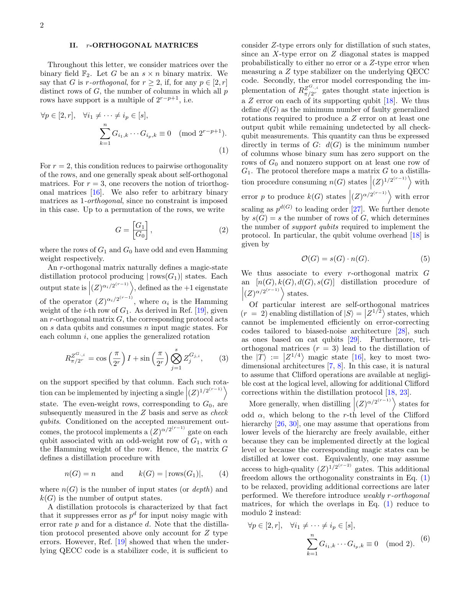
<figcaption class="paper-figure-caption"><b>Fig 1.</b> Low-resolution page preview, page 2</figcaption>
</figure>
<figure class="paper-figure-card">
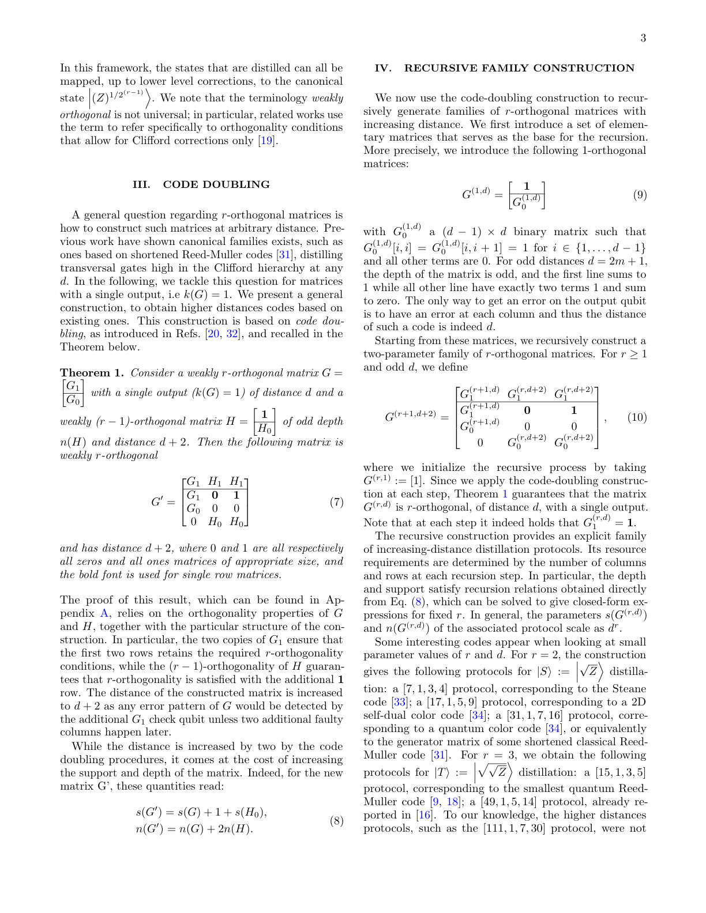
<figcaption class="paper-figure-caption"><b>Fig 2.</b> Low-resolution page preview, page 3</figcaption>
</figure>
<figure class="paper-figure-card">
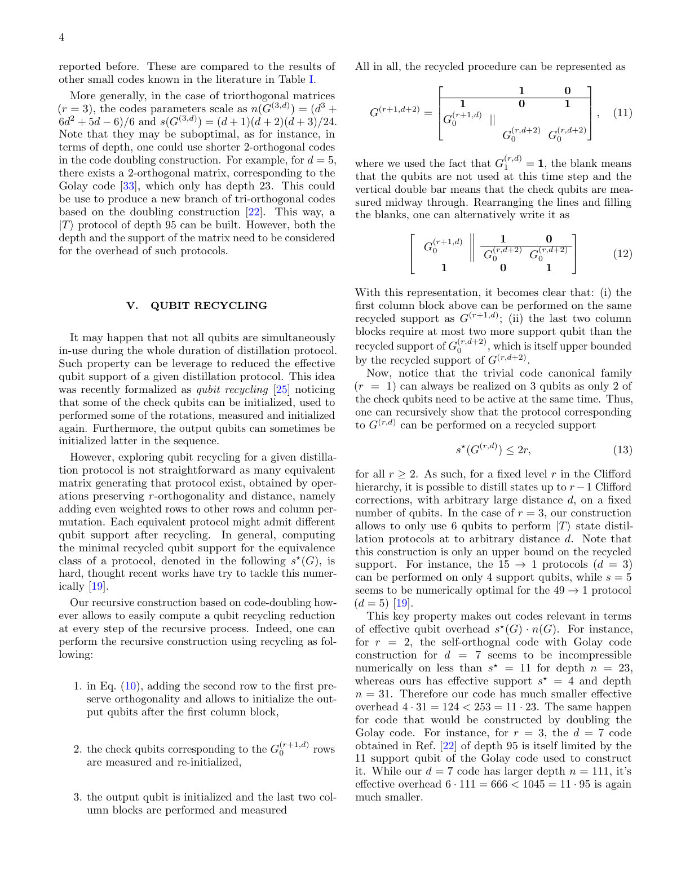
<figcaption class="paper-figure-caption"><b>Fig 3.</b> Low-resolution page preview, page 4</figcaption>
</figure>
<figure class="paper-figure-card">
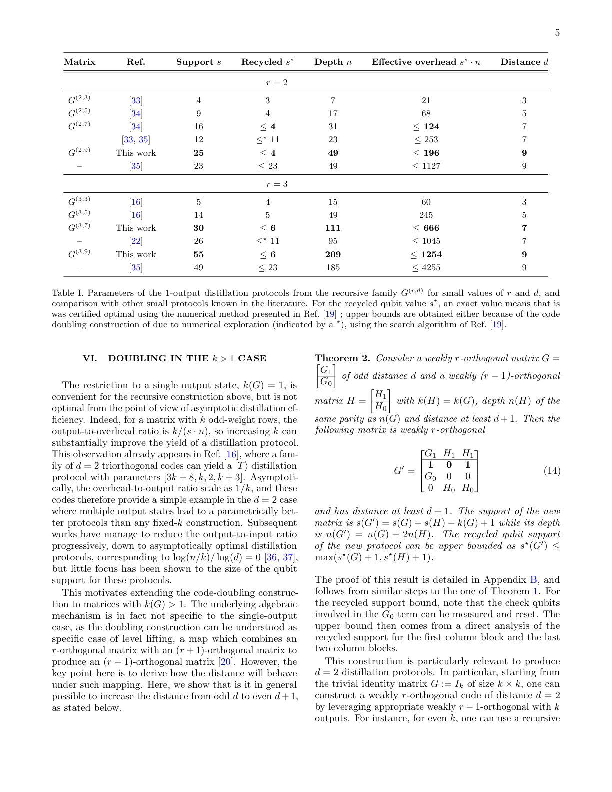
<figcaption class="paper-figure-caption"><b>Fig 4.</b> Low-resolution page preview, page 5</figcaption>
</figure>
<figure class="paper-figure-card">
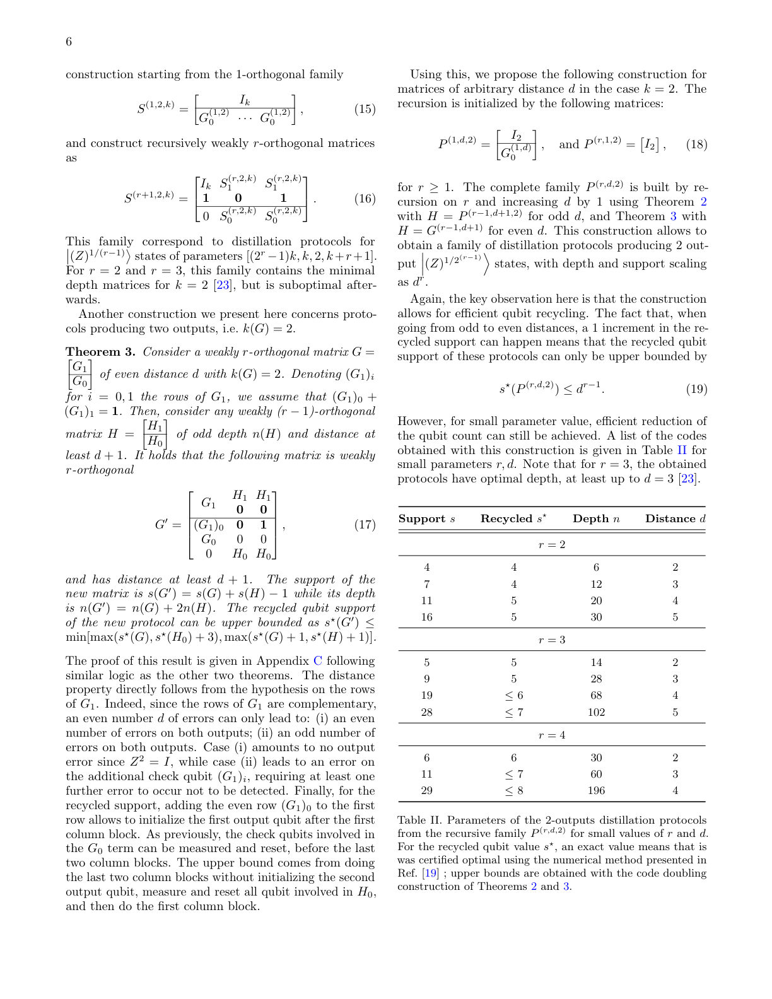
<figcaption class="paper-figure-caption"><b>Fig 5.</b> Low-resolution page preview, page 6</figcaption>
</figure>
</div>
<p><strong>Summary.</strong> This paper develops a systematic, recursive framework for designing quantum state distillation protocols necessary for fault-tolerant quantum computation. By utilizing code doubling and qubit recycling techniques, the authors construct families of protocols that achieve high code distance with minimal resource overhead. This work advances the theoretical understanding of resource management in quantum error correction.</p>
<p><strong>Why it may be interesting.</strong> The focus on resource optimization (qubit recycling) and achieving high-distance distillation protocols is highly relevant for scaling up quantum computation architectures.</p>
<details>
<summary>Detailed structure</summary>
<p><strong>Main problem.</strong> The paper addresses the limitation that quantum error-correcting codes alone cannot provide a universal set of fault-tolerant logical gates, necessitating high-fidelity magic state injection.</p>
<p><strong>Main result.</strong> The authors provide a recursive family of distillation protocols that can produce diagonal states at arbitrary high distance on a fixed number of logical qubits, significantly reducing resource overhead via qubit recycling.</p>
<p><strong>Method.</strong> The core method involves constructing and analyzing families of weakly r-orthogonal matrices using code doubling techniques and algebraic proofs over F_2.</p>
<p><strong>Model / system.</strong> The model is based on quantum error-correcting codes and the distillation of magic states (like the |T&gt; state). The mathematical framework uses r-orthogonal matrices G to characterize the resource requirements.</p>
<p><strong>Key observables.</strong> Distance (d), Support (s), Depth (n), and the minimal recycled qubit support (s*).</p>
<p><strong>Important parameters / regimes.</strong> The orthogonality level r, the distance d, and the number of output states k.</p>
<p><strong>Assumptions / limitations.</strong> The analysis primarily focuses on Z-type errors sufficient for stabilizer codes, and the construction relies on the availability of lower-level Clifford operations.</p>
<p><strong>Figures summary.</strong> The notes mention a Table I comparing parameters (s, s*, n, d, effective overhead) of the constructed G(r,d) protocols against known literature protocols.</p>
<p><strong>Paper structure.</strong> The paper builds by first defining the problem using r-orthogonal matrices, then introducing the code-doubling construction (Theorem 1), establishing a recursive family construction, and finally proving the properties (orthogonality, distance, support bounds) of the resulting matrices.</p>
</details>
<details>
<summary>Abstract</summary>
<p>In order to circumvent that no universal set of gates can be achieved on a given quantum error-correcting codes, additional gates can be performed through magic state injection. This however requires to have access to high fidelity magic state, which can be obtained by the distillation of low quality states to fewer higher quality ones. In this paper, we provide a family of distillation protocols able to produce diagonal states at every level of the Clifford hierarchy. This family is obtained recursively using code doubling techniques and leveraging qubit recycling, the fact that some idle qubits of the protocols can be measured and re-used. At a given level of the Clifford hierarchy, we show that the protocols we derive can be performed at arbitrary high distance on a fix number of logical qubits. This family recovers many known efficient protocols, and uncovers new ones, such as a $111 \to 1$ protocol for $|T\rangle$ state distillation at distance $7$, which are the most compact in term of volume. Finally, we discuss possible extension of this framework for distillation protocols producing more than one output state.</p>
</details>
<p><sub><a href="#top">↑ back to top</a></sub></p>

<p><a id="paper-2609.17121"></a></p>
<h3 id="floquet-theory-and-average-hamiltonian-theory-revisited-equivalence-convergence-and-applications-to-nmr"><a href="http://arxiv.org/abs/2609.17121v1">Floquet Theory and Average Hamiltonian Theory Revisited: Equivalence, Convergence and Applications to NMR</a></h3>
<p><strong>Authors:</strong> Antonia J. Bock, Matthias Ernst, Götz S. Uhrig<br>
<strong>Type:</strong> theory · <strong>Category:</strong> other · <strong>PDF:</strong> <a href="https://arxiv.org/pdf/2609.17121v1">https://arxiv.org/pdf/2609.17121v1</a><br>
<strong>Analysis basis:</strong> full PDF text, analyzed in chunks</p>
<div class="figure-strip-hint">↔ Scroll figures horizontally</div>
<div class="paper-figures-scroll">
<figure class="paper-figure-card">
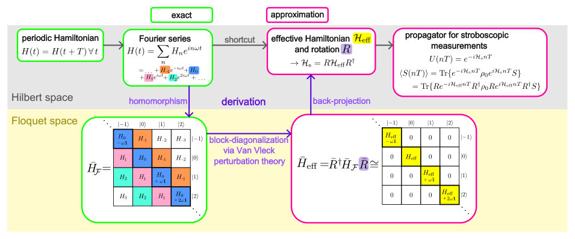
<figcaption class="paper-figure-caption"><b>Fig 1.</b> Figure 1: Overview of the Floquet–Van Vleck approach. The transformation of the Schrödinger equation allows one to rewrite the differential equation as an eigenvalue-eigenvector problem of an infinite-dimensional matrix, the Floquet Hamiltonian ¯HF. It acts in the Floquet space, which is spanned by the direct product of the Hilbert space basis and the Fourier states {|n⟩}. The Fourier indices of the entries in the central block ⟨n|. . .|n⟩sum up to zero, i.e., they are secular terms. Non-secular terms, of which the Fourier indices sum to m ̸= 0, are on the non-block-diagonals ⟨n|. . .|n −m⟩. The Van Vleck perturbation theory shifts the effect of the fast sidebands to the central band. In...</figcaption>
</figure>
<figure class="paper-figure-card">
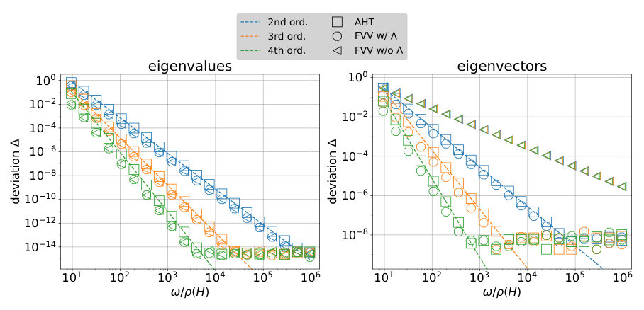
<figcaption class="paper-figure-caption"><b>Fig 2.</b> Figure 2: The deviations of U(t0 + T, t0) in AHT, FVV with and without the kick operator Λ (often referred to the stroboscopic and effective Hamiltonian in Floquet theory, respectively) to the numerically exact time propagator U(t0 + T, t0) are illustrated for a random 8 × 8 Hamiltonian. The dashed lines indicate the expected scaling behavior according to the truncated order in the perturbation parameter. In n-th order, this is (ρ(H)/ω)n for the eigenframe and (ρ(H)/ω)n+1 for the eigenvalues. Both AHT and FVV scale as expected, however, AHT is about three times worse than FVV as can be seen in Fig. 3. Clearly, the kick operator is needed in FVV in order to operate in the correctly tilted...</figcaption>
</figure>
<figure class="paper-figure-card">
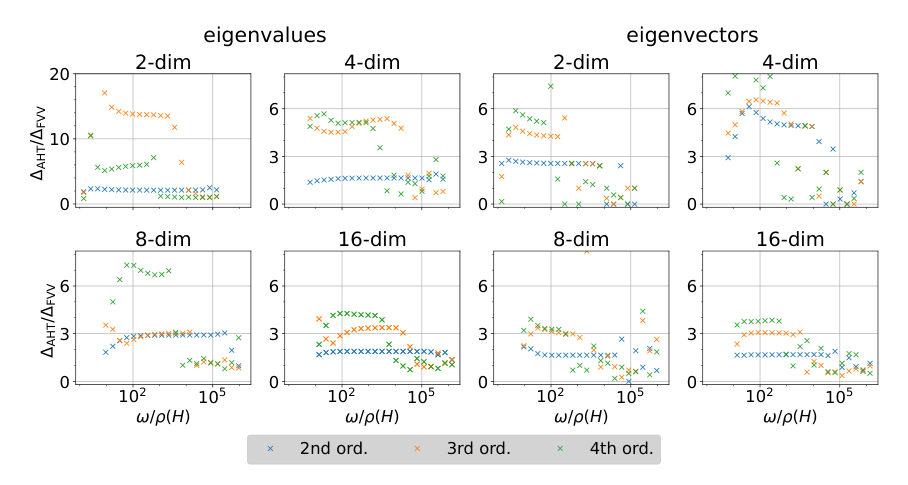
<figcaption class="paper-figure-caption"><b>Fig 3.</b> Figure 3: Both AHT and FVV yield the expected scaling behavior in the perturbation parameter. However, FVV performs better than AHT in the approximation of the stroboscopic evolution operator U(t0 + T, t0). AHT deviates ∼3.7 times more than FVV in the eigenvalues, and ∼2.6 in the eigenvectors.</figcaption>
</figure>
<figure class="paper-figure-card">
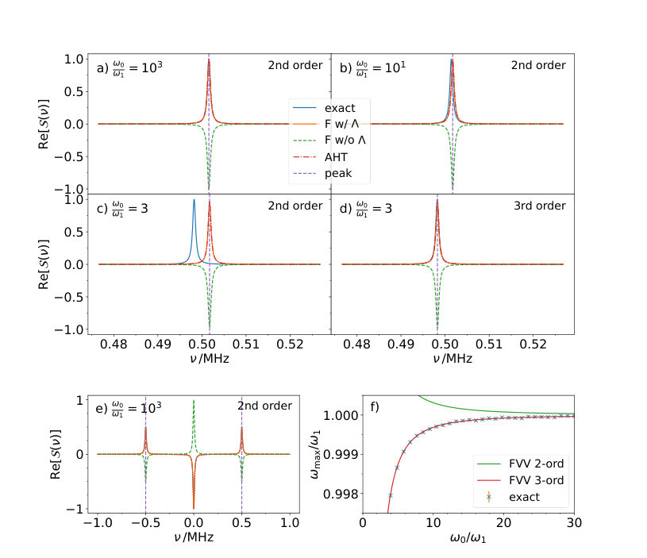
<figcaption class="paper-figure-caption"><b>Fig 4.</b> Figure 4: Bloch–Siegert shift [41] of a single-spin system under a linear-polarized resonant radio- frequency (rf) field. Results according to AHT and FVV with and without kick operator Λ are compared to the numerically exact outcome. The detection operator is S = Sx, and the initial density operator is ρ = Sz. The amplitude of the rf field is set to ω1/(2π) = 0.5 MHz, and the resonance frequency ω0 is varied. The broadening parameter is η/(2π) = 0.4 kHz in a)-d), and η/(2π) = 8 kHz in e). An overview of the spectrum is displayed in e). In a)-d), excerpts highlighting the actual Bloch–Siegert shift for different ratios ω0/ω1 are shown. The vertical purple dashed line corresponds to the peak...</figcaption>
</figure>
<figure class="paper-figure-card">
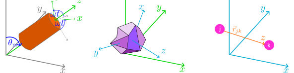
<figcaption class="paper-figure-caption"><b>Fig 5.</b> Figure 5: The rotation from the Principal-Axis System (PAS) of spin pair jk to the lab frame is composed of three subsequent rotations. 1) The laboratory frame system (LAB) is rotated around the y-axis at the magic angle θm, followed by a rotation around the new z-axis by ωrt. 2) The orientation of the crystallite-fixed frame in the rotor-fixed basis is defined by three Euler angles (α, β, γ). 3) Due to its axial symmetry, the PAS of jk can be fully described by two angles (θjk, φjk) with regard to the crystallite-fixed frame. These are the spherical coordinates of the connecting vector ⃗rjk, which provides the direction of the z-axis of the PAS of jk.</figcaption>
</figure>
</div>
<p><strong>Summary.</strong> This paper rigorously compares Floquet Theory and Average Hamiltonian Theory for periodically driven quantum systems, using the Floquet-Magnus Expansion to derive higher-order terms for both. The authors conclude that the Floquet-Van Vleck approach is superior for numerical calculations in applications like NMR spectroscopy. It provides a unified theoretical understanding of how these methods relate while offering practical recommendations for implementation.</p>
<p><strong>Why it may be interesting.</strong> This work provides a rigorous, systematic comparison between two cornerstone theoretical tools (AHT and Floquet theory) used to analyze time-periodic quantum dynamics, offering practical guidance on which formalism yields the best numerical results for complex systems like those in NMR.</p>
<details>
<summary>Detailed structure</summary>
<p><strong>Main problem.</strong> The paper aims to provide a detailed mathematical analysis comparing the equivalence, convergence, and practical application of Floquet Theory and Average Hamiltonian Theory (AHT) for periodically driven quantum systems.</p>
<p><strong>Main result.</strong> The Floquet-Van Vleck (FVV) approach is recommended over AHT because it is numerically more robust and accurate, despite the formal equivalence of the theories in the infinite limit.</p>
<p><strong>Method.</strong> The authors utilize the Floquet-Magnus Expansion (FME) to derive systematic, higher-order terms for both AHT and FVV, avoiding explicit time integration.</p>
<p><strong>Model / system.</strong> The theory is applied to periodically driven quantum systems, with a primary focus on Nuclear Magnetic Resonance (NMR) spectroscopy, modeling the time evolution governed by a time-periodic Hamiltonian H(t).</p>
<p><strong>Key observables.</strong> Effective Hamiltonians (F), the kick operator, time evolution operators, and spectroscopic shifts like the Bloch-Siegert shift.</p>
<p><strong>Important parameters / regimes.</strong> The driving period T, the ratio of driving frequency to system energies, and the order of the perturbation expansion (up to fourth order).</p>
<p><strong>Assumptions / limitations.</strong> The analysis relies on the mathematical framework of the Floquet-Magnus expansion and assumes the validity of perturbative expansions in the driving frequency.</p>
<p><strong>Figures summary.</strong> Figure 13 shows histograms comparing the relative differences of operators calculated with and without the kick operator for 2-spin and 3-spin MAS systems, highlighting differences between random and MAS Hamiltonians.</p>
<p><strong>Paper structure.</strong> The paper establishes the general framework using the FME, derives explicit formulas for higher-order terms in both FVV and AHT, and then validates these formulas and compare their predictions using specific NMR examples like the Bloch-Siegert shift.</p>
</details>
<details>
<summary>Abstract</summary>
<p>An accurate theoretical treatment of periodically driven quantum systems is crucial for various fields in the exact sciences, for instance Nuclear Magnetic Resonance (NMR) spectroscopy. Conventionally, either average Hamiltonian theory or Floquet theory is used to predict or describe experimental outcomes, such as the time evolution or the spectra yielding the information of the sample under study. A detailed analysis of the equivalence of these two approaches with an emphasis on applications in NMR will help to improve the theoretical understanding of NMR experiments.   In this work, we identify the Floquet-Magnus expansion as essential to prove the mathematical equivalence of Floquet theory and average Hamiltonian theory. We advocate a calculation scheme which is less prone to algebraic mistakes because explicit integration is avoided. On this basis, we provide the first four orders of both theories. We further examine their applicability to some experiments in NMR. As examples, we investigate the Bloch-Siegert shift and dipolar coupled spin systems under magic-angle spinning.   Based on our analysis, we recommend the use of the Floquet-Van Vleck approach including both the effective Hamiltonian and the kick operator. The consistent separation of secular and non-secular contributions appears to be especially advantageous for numerical robustness. Its accuracy is about three times better than the one provided by average Hamiltonian theory despite their formal equivalence.   Our findings provide important insights into the theoretical background of Floquet theory and average Hamiltonian theory. This includes the extent of their algebraic and perturbative equivalence, with an emphasis on how these findings are of relevance in the analysis of solid-state NMR experiments.</p>
</details>
<p><sub><a href="#top">↑ back to top</a></sub></p>

<p><a id="paper-2609.17309"></a></p>
<h3 id="generalised-quantum-steins-lemma-more-robust-than-ever"><a href="http://arxiv.org/abs/2609.17309v1">Generalised quantum Stein's lemma more robust than ever</a></h3>
<p><strong>Authors:</strong> Filippo Girardi, Kuan-Yi Lee, Masahito Hayashi, Ludovico Lami<br>
<strong>Type:</strong> theory · <strong>Category:</strong> quantum information and computing · <strong>PDF:</strong> <a href="https://arxiv.org/pdf/2609.17309v1">https://arxiv.org/pdf/2609.17309v1</a><br>
<strong>Analysis basis:</strong> full PDF text, analyzed in chunks</p>
<div class="figure-strip-hint">↔ Scroll figures horizontally</div>
<div class="paper-figures-scroll">
<figure class="paper-figure-card">
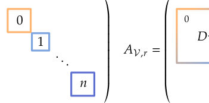
<figcaption class="paper-figure-caption"><b>Fig 1.</b> Figure 1: A pictorial representation of the action of 𝐷V, 𝐴V,𝑟and 𝐵V,𝑟.</figcaption>
</figure>
<figure class="paper-figure-card">
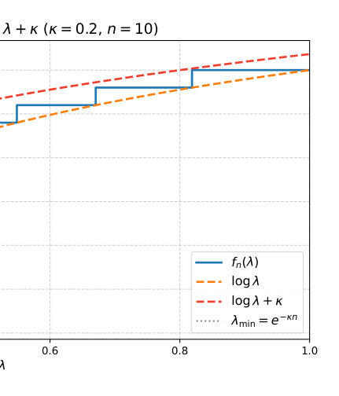
<figcaption class="paper-figure-caption"><b>Fig 2.</b> Figure 2: An example of logarithmic rounding.</figcaption>
</figure>
<figure class="paper-figure-card">
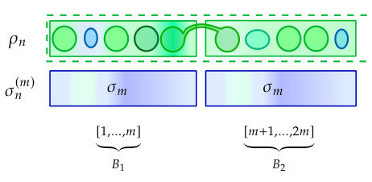
<figcaption class="paper-figure-caption"><b>Fig 3.</b> Figure 3: Blocking and padding the systems</figcaption>
</figure>
<figure class="paper-figure-card">
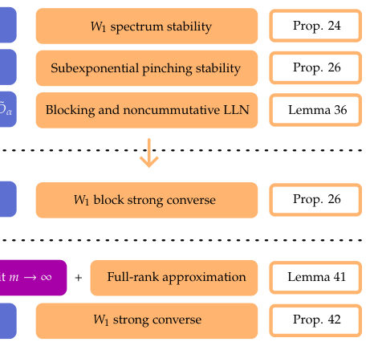
<figcaption class="paper-figure-caption"><b>Fig 4.</b> Figure 4: Comparison of the converse proof for the i.i.d. GQSL and 𝑊1 GQSL.</figcaption>
</figure>
<figure class="paper-figure-card">
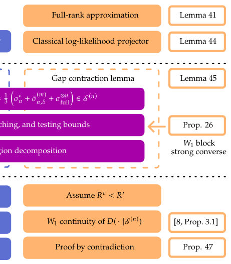
<figcaption class="paper-figure-caption"><b>Fig 5.</b> Figure 5: Comparison of the achievability proof for the i.i.d. GQSL and 𝑊1 GQSL.</figcaption>
</figure>
</div>
<p><strong>Summary.</strong> This work generalizes the quantum Stein's lemma to handle quantum hypothesis testing scenarios where the underlying source of quantum states is not strictly independent and identically distributed. By employing the quantum Wasserstein distance, the authors provide a robust, universal bound that applies to sources merely 'close' to i.i.d. This significantly broadens the applicability of fundamental quantum information bounds for technological applications.</p>
<p><strong>Why it may be interesting.</strong> The generalization of fundamental bounds like Stein's lemma to non-i.i.d. sources is crucial for modeling realistic quantum processes where local correlations or non-stationarity are present, which is relevant in quantum communication and sensing.</p>
<details>
<summary>Detailed structure</summary>
<p><strong>Main problem.</strong> The paper addresses the generalization of quantum Stein's lemma for quantum hypothesis testing, particularly when the source of quantum states deviates from the ideal independent and identically distributed (i.i.d.) case.</p>
<p><strong>Main result.</strong> They establish a universal version of the lemma applicable to sources asymptotically close to i.i.d. with respect to the normalized quantum Wasserstein distance of order 1.</p>
<p><strong>Method.</strong> The analysis relies on defining and utilizing the quantum Wasserstein distance ($W_1$) to characterize convergence for 'almost i.i.d.' sources, extending results based on relative entropy divergences.</p>
<p><strong>Model / system.</strong> The framework involves distinguishing between two hypotheses ($
ho_n$ vs. $S(n)$) on a tensor product Hilbert space $H^{\otimes n}$, using quantum states and error exponents.</p>
<p><strong>Key observables.</strong> Type II error exponent ($eta_\epsilon$), regularised relative entropy ($D_\infty(
ho \| S)$), and the quantum Wasserstein distance ($W_1$).</p>
<p><strong>Important parameters / regimes.</strong> The order of the Wasserstein distance (order 1), the error tolerance $\epsilon$, and the asymptotic limit $n 	o \infty$.</p>
<p><strong>Assumptions / limitations.</strong> The null source must be asymptotically close to i.i.d. with respect to the normalized quantum Wasserstein distance, and the alternative set $S(n)$ must satisfy several structural axioms (e.g., compactness, convexity).</p>
<p><strong>Figures summary.</strong> Not specified, but the notes mention Figure 7 illustrating a three-region decomposition of the Hilbert space $\mathbb{H}^{\otimes n}$ using projectors.</p>
<p><strong>Paper structure.</strong> The paper builds from the standard GQSL for i.i.d. sources, extends the theory by introducing the Wasserstein distance to handle general sources, and culminates in solving the Stein exponent for arbitrarily varying null hypotheses.</p>
</details>
<details>
<summary>Abstract</summary>
<p>The generalised quantum Stein's lemma is a key result in quantum hypothesis testing, and connects this fundamental primitive of quantum information processing with quantum resource manipulation, a task that is central for technological applications. Prior works have proved this statement in the idealised setting of independent and identically distributed (i.i.d.) sequences of quantum states, and recent extensions consider also sources that are 'close' to i.i.d., according to the strict notion put forth by Mazzola, Sutter, and Renner. For several applications, however, one would need to consider yet more general sources. We establish a version of the generalised quantum Stein's lemma that is conceptually much simpler and general, as it applies to any source that is asymptotically close to an i.i.d. state with respect to the normalised quantum Wasserstein distance of order 1. As an immediate consequence, we solve the Stein exponent of a scenario where the null hypothesis is arbitrarily varying, expressing it in terms of i.i.d. Stein exponents corresponding to arbitrary states in the convex hull of the null hypothesis base set.</p>
</details>
<p><sub><a href="#top">↑ back to top</a></sub></p>

<p><a id="paper-2609.17256"></a></p>
<h3 id="geometric-quantifier-of-the-incompatibility-of-single-particle-property-attribution-in-indistinguishable-boson-systems"><a href="http://arxiv.org/abs/2609.17256v1">Geometric quantifier of the incompatibility of single-particle property attribution in indistinguishable boson systems</a></h3>
<p><strong>Authors:</strong> P. Céspedes, A. Valdés-Hernández, F. H. Holik, A. P. Majtey<br>
<strong>Type:</strong> theory · <strong>Category:</strong> quantum information and computing · <strong>PDF:</strong> <a href="https://arxiv.org/pdf/2609.17256v1">https://arxiv.org/pdf/2609.17256v1</a><br>
<strong>Analysis basis:</strong> full PDF text, analyzed in chunks</p>
<div class="figure-strip-hint">↔ Scroll figures horizontally</div>
<div class="paper-figures-scroll">
<figure class="paper-figure-card">
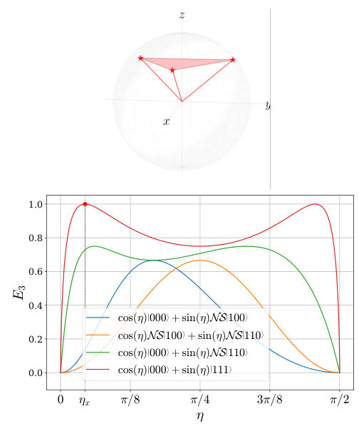
<figcaption class="paper-figure-caption"><b>Fig 1.</b> Figure 1: Top panel: Majorana constellation for the GHZ-type state with maximum E3, corresponding to the red dot in the bottom panel (ηx ≈0.13782). All other maximizing states are obtained by the orbit under rigid rotations of that state. Bottom panel: E3 as a function of η for different one-parameter families of three-qubit states.</figcaption>
</figure>
<figure class="paper-figure-card">
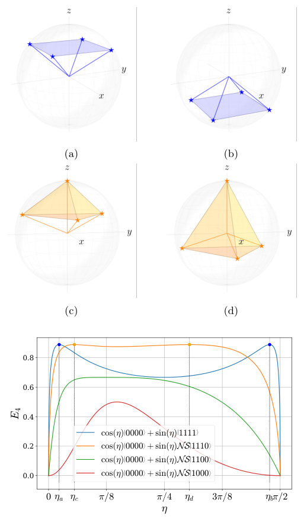
<figcaption class="paper-figure-caption"><b>Fig 2.</b> Figure 2: Panels (a)–(d): Constellations of four-qubit states reaching the maximum value of E4. Panels (a) and (b) correspond to the blue state family at ηa ≈0.0715 and ηb = π/2 −ηa, respectively, while (c) and (d) cor- respond to the orange state family at ηc ≈0.1750 and ηd ≈0.9552, respectively. Panel (e): E4 as a function of η for different one-parameter families of four-qubit states, with dots indicating the states depicted in panels (a)–(d).</figcaption>
</figure>
<figure class="paper-figure-card">
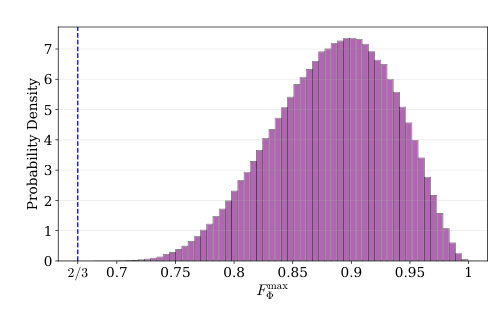
<figcaption class="paper-figure-caption"><b>Fig 3.</b> Figure 3: Probability density distribution of the maxi- mum fidelity F max Φ for a 3 qutrit system (N = 3, d = 3). Histogram obtained from a sampling of Haar-random pure symmetric states in the 10-dimensional Hilbert space.</figcaption>
</figure>
</div>
<p><strong>Summary.</strong> This work introduces a geometric quantifier to measure entanglement in indistinguishable boson systems by quantifying the incompatibility of assigning individual properties to the particles. It extends the initial qubit formulation, which uses the Majorana representation, to higher-dimensional qudits. The resulting measure, $E_N(\Phi)$, provides a powerful, general tool for characterizing quantum correlations in complex many-body quantum systems.</p>
<p><strong>Why it may be interesting.</strong> It provides a rigorous, geometrically motivated tool to quantify entanglement in systems where standard local operations theory breaks down due to particle indistinguishability, which is crucial for understanding quantum resources in many-body quantum computation.</p>
<details>
<summary>Detailed structure</summary>
<p><strong>Main problem.</strong> The paper addresses how to quantify entanglement in indistinguishable boson systems by measuring the incompatibility of assigning well-defined single-particle properties to the constituent particles.</p>
<p><strong>Main result.</strong> A generalized geometric quantifier, $E_N(\Phi)$, is introduced that successfully extends the incompatibility measure from qubits to qudits, linking it to the geometry of the state relative to the manifold of symmetrized states.</p>
<p><strong>Method.</strong> The method involves defining the quantifier as a combination of the state's fidelity to the symmetrized state manifold and a measure of pairwise property-attribution incompatibility derived from Fubini-Study angles.</p>
<p><strong>Model / system.</strong> The study focuses on pure states of $N$ indistinguishable bosons, initially using the Majorana stellar representation for qubits, and generalizing this framework to $d$-level bosons (qudits).</p>
<p><strong>Key observables.</strong> The geometric quantifier $E_N(\Phi)$, pairwise fidelity $F_{ij}$, and the minimum incompatibility measure $E_{\min}^{N,\Phi}$.</p>
<p><strong>Important parameters / regimes.</strong> The number of particles $N$, the dimension $d$ of the single-boson Hilbert space, and the pairwise fidelity $F_{ij}$.</p>
<p><strong>Assumptions / limitations.</strong> The analysis relies on extending the GMW separability criterion and adapting geometric tools (like the Majorana representation) to higher dimensions where direct factorization is lost.</p>
<p><strong>Figures summary.</strong> Figures illustrate the Majorana constellation for small $N$ (e.g., $N=3, 4$) and show the dependence of the incompatibility measure on system parameters.</p>
<p><strong>Paper structure.</strong> The paper first establishes the concept using qubits and the Majorana representation, deriving an explicit quantifier $E_N(\Psi)$. It then generalizes this approach to qudits ($d>2$) by defining a composite quantifier $E_N(\Phi)$ that incorporates both fidelity distance and generalized pairwise incompatibility.</p>
</details>
<details>
<summary>Abstract</summary>
<p>Entanglement in indistinguishable particle systems can be characterized by the impossibility of unambiguously attributing a complete set of physical properties to the individual constituent particles. In this work, we introduce a geometric quantifier of the incompatibility of such simultaneous property attribution for pure states of $N$ indistinguishable bosons. Using the Majorana stellar representation, any symmetric multi-qubit state can be expressed as the symmetrization of constituent single-particle states, allowing the associated single-particle properties to be directly linked with the corresponding Majorana stars. This establishes a direct connection between the geometry of the Majorana representation on the Bloch sphere and the entanglement criterion based on the attribution of single-particle properties in systems of identical two-level bosons. We then generalize this geometric approach to higher-dimensional bosons, extending the quantifier from qubits to qudits, while retaining a geometric interpretation of property-attribution incompatibility in terms of Fubini-Study angles.</p>
</details>
<p><sub><a href="#top">↑ back to top</a></sub></p>

<p><a id="paper-2609.16640"></a></p>
<h3 id="graph-construction-in-qubo-based-recursive-phylogenetic-tree-reconstruction"><a href="http://arxiv.org/abs/2609.16640v1">Graph construction in QUBO-based recursive phylogenetic tree reconstruction</a></h3>
<p><strong>Authors:</strong> Yoshiki Kanazawa, Ashish Joshi, Takahiko Koyama<br>
<strong>Type:</strong> theory · <strong>Category:</strong> other · <strong>PDF:</strong> <a href="https://arxiv.org/pdf/2609.16640v1">https://arxiv.org/pdf/2609.16640v1</a><br>
<strong>Analysis basis:</strong> full PDF text, analyzed in chunks</p>
<div class="figure-strip-hint">↔ Scroll figures horizontally</div>
<div class="paper-figures-scroll">
<figure class="paper-figure-card">
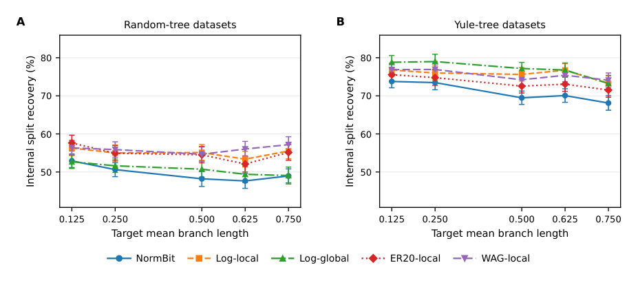
<figcaption class="paper-figure-caption"><b>Fig 1.</b> Figure 1: Amino-acid tree-reconstruction accuracy across affinity representations without post-swap refinement. (A) Random-tree datasets. (B) Yule-tree datasets. Points indicate mean internal split recovery across 100 replicate datasets for each target mean branch length, and error bars indicate nonparametric bootstrap 95% confidence intervals.</figcaption>
</figure>
<figure class="paper-figure-card">
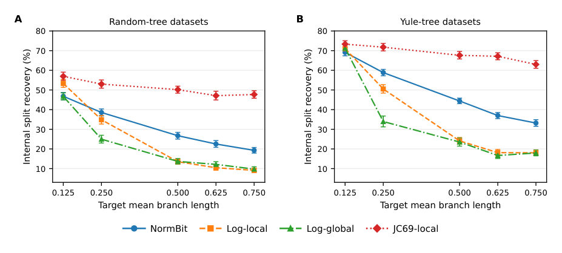
<figcaption class="paper-figure-caption"><b>Fig 2.</b> Figure 2: Nucleotide tree-reconstruction accuracy across affinity representations without post- swap refinement. (A) Random-tree datasets. (B) Yule-tree datasets. Points indicate mean internal split recovery across 100 replicate datasets for each target mean branch length, and error bars indicate nonparametric bootstrap 95% confidence intervals.</figcaption>
</figure>
<figure class="paper-figure-card">
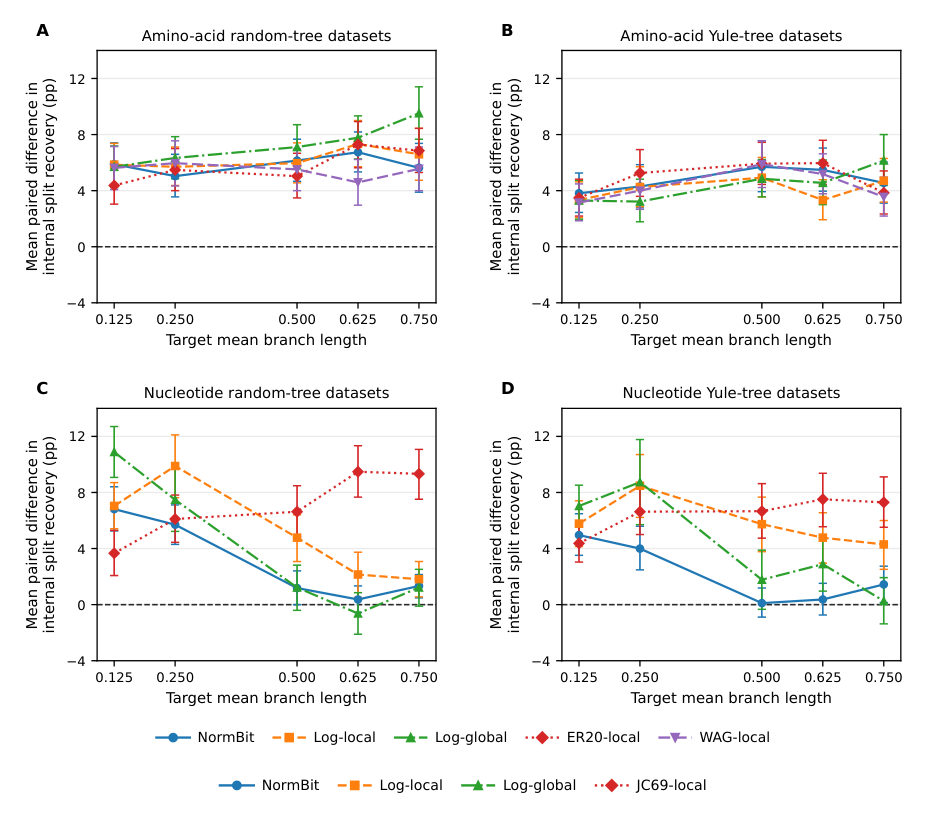
<figcaption class="paper-figure-caption"><b>Fig 3.</b> Figure 3: Effect of post-swap refinement on tree-reconstruction accuracy. (A) Amino-acid random-tree datasets. (B) Amino-acid Yule-tree datasets. (C) Nucleotide random-tree datasets. (D) Nucleotide Yule-tree datasets. Differences were calculated as split recovery with post-swap refinement minus split recovery without refinement for the same simulated dataset and affinity representation. Points indicate mean paired differences across 100 paired reconstructions per condition, and error bars indicate nonparametric bootstrap 95% confidence intervals. Positive values indicate higher split recovery after post-swap refinement.</figcaption>
</figure>
<figure class="paper-figure-card">
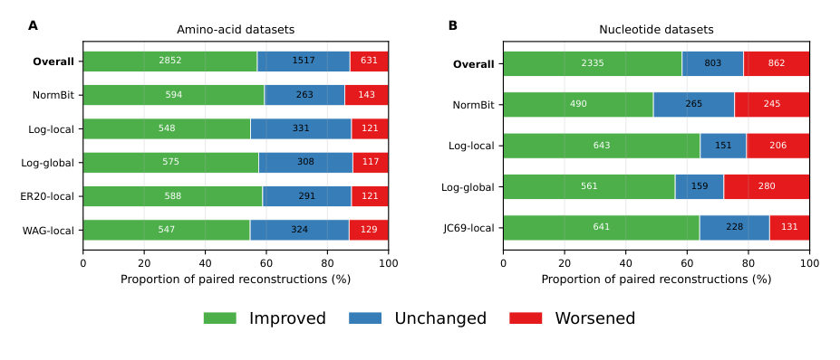
<figcaption class="paper-figure-caption"><b>Fig 4.</b> Figure 4: Reconstruction-level effects of post-swap refinement on internal split recovery. (A) Amino-acid datasets. (B) Nucleotide datasets. For each simulated dataset and affinity represen- tation, the outcome was classified as improved, unchanged, or worsened according to whether split recovery with post-swap refinement was higher than, equal to, or lower than recovery without refinement. Bars indicate the proportions of paired reconstructions in each category, and numbers within the bars indicate counts. Each affinity representation comprised 1,000 paired reconstructions; the overall summaries comprised 5,000 amino-acid and 4,000 nucleotide reconstructions. All paired reconstructions...</figcaption>
</figure>
<figure class="paper-figure-card">
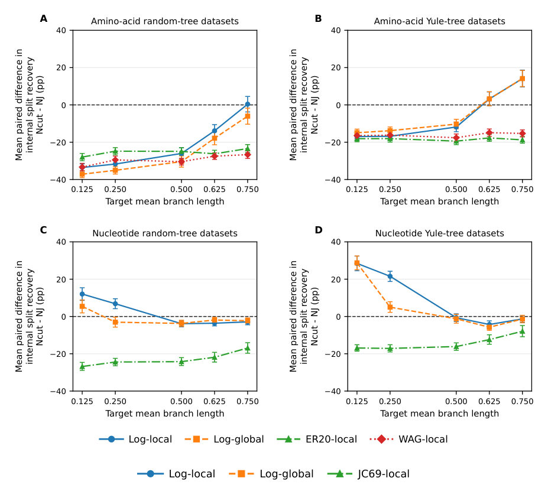
<figcaption class="paper-figure-caption"><b>Fig 5.</b> Figure 5: Differences in tree-reconstruction accuracy between recursive Ncut and neighbor joining. (A) Amino-acid random-tree datasets. (B) Amino-acid Yule-tree datasets. (C) Nucleotide random-tree datasets. (D) Nucleotide Yule-tree datasets. Recursive Ncut results were obtained without post-swap refinement. Differences were calculated as split recovery obtained by recursive Ncut minus that obtained by NJ for the same simulated dataset and underlying pairwise distance representation. Points indicate mean paired differences across 100 paired reconstructions per condition, and error bars indicate nonparametric bootstrap 95% confidence intervals. Positive values indicate higher recovery by...</figcaption>
</figure>
</div>
<p><strong>Summary.</strong> This work investigates how the initial representation of pairwise sequence relationships impacts the accuracy of phylogenetic tree reconstruction using a recursive normalized-cut (Ncut) approach. By comparing Ncut against Neighbor Joining (NJ) using various affinity matrices, the authors demonstrate that the graph construction method is crucial, requiring a joint evaluation of representation, optimization, and recursive assembly.</p>
<p><strong>Why it may be interesting.</strong> While the core topic is bioinformatics, the methodology involves formulating graph partitioning as a QUBO problem and solving it using optimization techniques, which touches upon computational aspects relevant to quantum optimization.</p>
<details>
<summary>Detailed structure</summary>
<p><strong>Main problem.</strong> The paper addresses the challenge of accurately reconstructing evolutionary relationships (phylogenetic trees) from molecular sequence data.</p>
<p><strong>Main result.</strong> The choice of graph construction (pairwise affinity representation) is a critical determinant of the accuracy in recursive Ncut-based phylogenetic reconstruction, and this representation must be evaluated jointly with the reconstruction method.</p>
<p><strong>Method.</strong> The study uses a recursive normalized-cut (Ncut) framework, formulating graph-partitioning subproblems as QUBO models solved via Simulated Bifurcation, and compares its results against Neighbor Joining (NJ).</p>
<p><strong>Model / system.</strong> The system involves molecular sequence data (amino-acid and nucleotide alignments) used to model evolutionary divergence. Comparisons are made across various distance metrics (e.g., WAG, JC69, BLAST-derived).</p>
<p><strong>Key observables.</strong> Internal split recovery (measured as percentage of recovered splits), and the mean paired difference in split recovery between Ncut and NJ.</p>
<p><strong>Important parameters / regimes.</strong> Evolutionary divergence levels (branch lengths), sequence types (nucleotide vs. amino-acid), and the specific affinity representation used (e.g., normalized bit-score, local/global kernels).</p>
<p><strong>Assumptions / limitations.</strong> The analysis assumes that the performance of the Ncut framework depends heavily on the quality of the input pairwise distance/affinity matrix.</p>
<p><strong>Figures summary.</strong> The figures summarize the effect of post-swap refinement on accuracy, compare Ncut vs. NJ performance across different datasets, and show the overall mean paired differences in split recovery.</p>
<p><strong>Paper structure.</strong> The paper systematically evaluates how different pairwise representations influence the recursive Ncut framework, compares these results against established distance-based methods like NJ, and analyzes the impact of refinement steps.</p>
</details>
<details>
<summary>Abstract</summary>
<p>Molecular sequence data are used to reconstruct evolutionary relationships among taxa, but reconstruction accuracy depends not only on the tree-building method but also on how pairwise sequence relationships are represented. We evaluated sequence-to-affinity representations in a recursive normalized-cut (Ncut) framework whose graph-partitioning subproblems were formulated as quadratic unconstrained binary optimization (QUBO) models and solved using Simulated Bifurcation. Using simulated amino-acid and nucleotide datasets spanning multiple tree-generation settings and evolutionary divergence, we compared normalized bit-score affinities with representations derived from transformed sequence similarities and evolutionary distances, examined post-swap refinement, and used neighbor joining (NJ) as a distance-based comparator.   Affinity representation substantially affected internal split recovery, particularly for nucleotide data. JC69-based local affinities maintained comparatively high accuracy as divergence increased, whereas normalized bit-score and BLAST-derived kernel representations declined more markedly. Post-swap refinement generally improved recovery, but not consistently across individual reconstructions. NJ achieved higher mean split recovery than corresponding recursive Ncut reconstructions for WAG and JC69 distances across all evaluated conditions, whereas recursive Ncut outperformed NJ for BLAST-derived logarithmic distances under some conditions.   These results show that graph construction is an important determinant of recursive Ncut-based phylogenetic reconstruction. A representation that performs well within Ncut does not necessarily provide the most accurate use of the underlying pairwise distances. Pairwise representation, affinity transformation, optimization, and recursive tree construction should therefore be evaluated jointly.</p>
</details>
<p><sub><a href="#top">↑ back to top</a></sub></p>

<p><a id="paper-2609.16125"></a></p>
<h3 id="hyperbolic-color-codes-with-constant-rate-and-polynomial-distance"><a href="http://arxiv.org/abs/2609.16125v1">Hyperbolic color codes with constant rate and polynomial distance</a></h3>
<p><strong>Authors:</strong> Shun Hasegawa, Hayata Yamasaki<br>
<strong>Type:</strong> theory · <strong>Category:</strong> quantum information and computing · <strong>PDF:</strong> <a href="https://arxiv.org/pdf/2609.16125v1">https://arxiv.org/pdf/2609.16125v1</a><br>
<strong>Analysis basis:</strong> full PDF text, analyzed in chunks</p>
<div class="figure-strip-hint">↔ Scroll figures horizontally</div>
<div class="paper-figures-scroll">
<figure class="paper-figure-card">
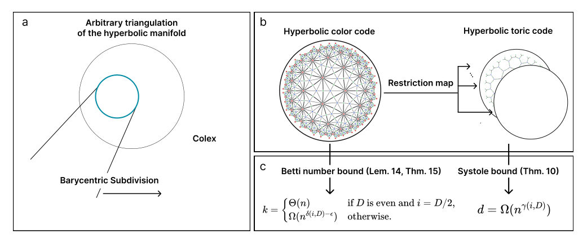
<figcaption class="paper-figure-caption"><b>Fig 1.</b> FIG. 1. Overview of the construction and main results of this work. (a) Starting from an arbitrary triangulation of a closed hyperbolic manifold, we obtain a colex by barycentric subdivision, which ensures the required vertex colorability for defining a color code (Sec. III). (b) To derive a lower bound on the distance of the resulting hyperbolic color code, we transform the color code into a collection of associated toric codes using restriction maps and show that the color-code distance is bounded from below by the distances of these toric codes (Sec. IV). (c) We explicitly determine the scaling of the number of logical qubits k and the code distance d with the number of physical qubits...</figcaption>
</figure>
</div>
<p><strong>Summary.</strong> This paper constructs a new family of hyperbolic color codes that overcome previous limitations by achieving both a constant encoding rate and polynomial code distance. The methodology combines advanced algebraic topology with hyperbolic geometry to define these codes. This breakthrough provides a powerful theoretical testbed for developing high-performance, fault-tolerant quantum computation protocols.</p>
<p><strong>Why it may be interesting.</strong> This work directly addresses the theoretical limits of quantum error correction by providing concrete constructions for high-rate codes with large, polynomially scaling distances, which is crucial for building fault-tolerant quantum computers.</p>
<details>
<summary>Detailed structure</summary>
<p><strong>Main problem.</strong> The primary goal is to construct hyperbolic color codes that simultaneously achieve a constant encoding rate and polynomial code distance.</p>
<p><strong>Main result.</strong> The authors construct a family of hyperbolic color codes that achieve both constant rate and polynomial distance, particularly in even dimensions, establishing a significant improvement over previous logarithmic distance bounds.</p>
<p><strong>Method.</strong> The construction relies on building codes from arithmetic hyperbolic manifolds that support polynomial-distance hyperbolic toric codes, utilizing algebraic topology concepts like chain complexes and homology groups.</p>
<p><strong>Model / system.</strong> The work focuses on quantum error-correcting codes, specifically hyperbolic color codes, which are a high-rate quantum low-density parity-check (qLDPC) code structure relevant for fault-tolerant quantum computation.</p>
<p><strong>Key observables.</strong> Code distance ($d$), encoding rate (aiming for constant rate), and the number of logical qubits ($k$).</p>
<p><strong>Important parameters / regimes.</strong> The construction applies to arbitrary dimensions $D \geq 4$, with specific results detailed for even dimensions ($D=2m$).</p>
<p><strong>Assumptions / limitations.</strong> The analysis builds upon the existence of hyperbolic manifolds supporting the necessary structures and relies on applying advanced theorems like the Lück approximation theorem.</p>
<p><strong>Figures summary.</strong> Figure 1 illustrates the construction process, showing the use of barycentric subdivision for the color code, the transformation to a toric code for distance bounding, and the explicit determination of scaling exponents for $k$ and $d$.</p>
<p><strong>Paper structure.</strong> The paper develops the mathematical framework using chain complexes to define code parameters ($k$ and $d$), proves the existence of the desired codes via Theorem 1, and provides detailed algebraic and geometric machinery (e.g., analyzing symmetry groups $SOf$ and spectral gaps) to establish the polynomial bounds.</p>
</details>
<details>
<summary>Abstract</summary>
<p>Recent advances in quantum hardware relax the strict geometric-locality constraints traditionally imposed on quantum error-correcting codes, motivating interest in high-rate quantum low-density parity-check (qLDPC) codes. At the same time, color codes provide a particularly rich setting for fault-tolerant quantum computation, underlying protocols such as single-shot error correction and self-correcting quantum computation. Hyperbolic color codes provide a class of high-rate qLDPC codes that also retain the structural features of color codes relevant to fault-tolerant quantum computation. However, previous constructions of hyperbolic color codes have achieved at most logarithmic code distance. In this work, we construct hyperbolic color codes with both constant rate and polynomial distance by building on arithmetic hyperbolic manifolds that support polynomial-distance hyperbolic toric codes. Our construction applies in arbitrary dimension \(D\geq 4\). In even dimensions, the resulting type-\(D/2\) color codes have constant encoding rate and polynomial distance, while in other cases the number of logical qubits and the code distance both exhibit polynomial scaling. We further derive explicit exponents for polynomial lower bounds as functions of the dimension and code type. These results establish a family of hyperbolic color codes simultaneously achieving constant rate and polynomial distance and providing a testbed to explore fault-tolerant quantum computation protocols that combine high-rate quantum codes with the structural advantages of color codes.</p>
</details>
<p><sub><a href="#top">↑ back to top</a></sub></p>

<p><a id="paper-2609.16726"></a></p>
<h3 id="improved-separations-between-quantum-and-classical-communication-complexity-of-total-functions"><a href="http://arxiv.org/abs/2609.16726v1">Improved Separations between Quantum and Classical Communication Complexity of Total Functions</a></h3>
<p><strong>Authors:</strong> François Le Gall<br>
<strong>Type:</strong> theory · <strong>Category:</strong> quantum information and computing · <strong>PDF:</strong> <a href="https://arxiv.org/pdf/2609.16726v1">https://arxiv.org/pdf/2609.16726v1</a><br>
<strong>Analysis basis:</strong> full PDF text, analyzed in chunks</p>
<div class="figure-strip-hint">↔ Scroll figures horizontally</div>
<div class="paper-figures-scroll">
<figure class="paper-figure-card">
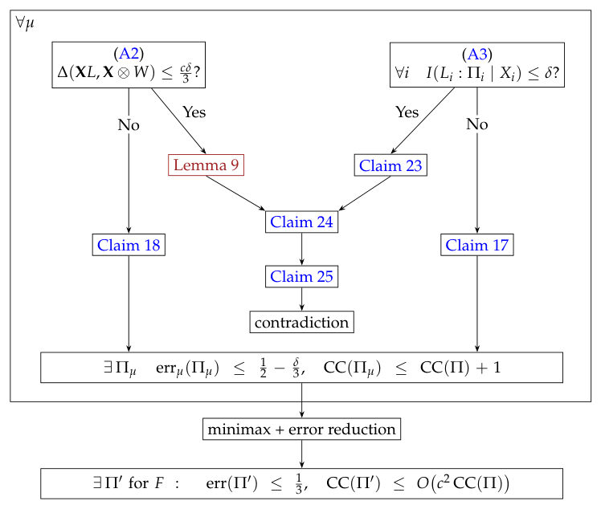
<figcaption class="paper-figure-caption"><b>Fig 1.</b> Figure 1: Proof of Theorem 4.1, following [3, Figure 1]. Red marks Lemma 9, which replaces Claim 22; all other claims are from [3].</figcaption>
</figure>
</div>
<p><strong>Summary.</strong> This paper significantly advances the understanding of the gap between quantum and classical communication complexity for total functions. By refining existing frameworks, the authors achieve stronger lower bounds for randomized communication relative to the quantum communication required. This work is a major theoretical result in quantum information theory.</p>
<p><strong>Why it may be interesting.</strong> While highly theoretical, the techniques used—especially the construction of complex functions and the use of extractors—are foundational tools in quantum information theory that underpin the understanding of computational limits.</p>
<details>
<summary>Detailed structure</summary>
<p><strong>Main problem.</strong> The paper aims to improve the known separations between the quantum and classical communication complexity of total Boolean functions.</p>
<p><strong>Main result.</strong> It establishes significant separations, showing that for two quantum messages, the randomized communication complexity $R(f)$ can be exponentially larger than the quantum complexity $Q_2(f)$, achieving $R(f) = e\Omega(\sqrt{n})$ versus $Q_2(f) = 	ext{polylog}(n)$.</p>
<p><strong>Method.</strong> The improvements rely on refining previous constructions by replacing lookup tables with seeded linear extractors and constructing total functions $F_{	ext{tot}}$ from partial functions $F$ to lift the separation bounds.</p>
<p><strong>Model / system.</strong> The analysis focuses on the communication complexity of total Boolean functions $f: \{0, 1\}^n 	imes \{0, 1\}^n 	o \{0, 1\}$, involving quantum and randomized communication protocols.</p>
<p><strong>Key observables.</strong> Randomized communication complexity $R(f)$, quantum communication complexity $Q_r(f)$, and the input size overhead $N$.</p>
<p><strong>Important parameters / regimes.</strong> The separation scales involve polylogarithmic quantum communication versus bounds like $e\Omega(\sqrt{n})$ or $e\Omega(n^{1-\varepsilon})$ for randomized communication.</p>
<p><strong>Assumptions / limitations.</strong> The proof heavily relies on the existence of strong seeded extractors and the ability to construct total functions $F_{	ext{tot}}$ from partial functions $F$.</p>
<p><strong>Figures summary.</strong> Not specified.</p>
<p><strong>Paper structure.</strong> The paper builds upon previous work by first establishing general conversion theorems (Theorem 4) relating partial to total function complexities, and then applying these techniques to specific functions (like Shapem or k-Forrelation) to derive concrete, improved separation bounds (Theorems 2 and 3).</p>
</details>
<details>
<summary>Abstract</summary>
<p>We refine Gavinsky's framework (arXiv:2608.18784) for exponential separations between quantum and randomized communication complexity of total functions and obtain larger separations: polylogarithmic quantum communication versus $\tildeΩ(\sqrt n)$ randomized communication with two quantum messages, and versus $Ω(n^{1-\varepsilon})$ for every fixed $0<\varepsilon<1$ with more quantum messages.</p>
</details>
<p><sub><a href="#top">↑ back to top</a></sub></p>

<p><a id="paper-2609.17080"></a></p>
<h3 id="la-substitution-studies-on-the-heavy-fermion-superconductor-cerhmath877mathasmath878math"><a href="http://arxiv.org/abs/2609.17080v1">La substitution studies on the heavy-fermion superconductor CeRh$_2$As$_2$</a></h3>
<p><strong>Authors:</strong> Sushma Lakshmi Ravi Sankar, Manuel Brando, Jochen Wosnitza, Seunghyun Khim<br>
<strong>Type:</strong> experiment · <strong>Category:</strong> strongly correlated electrons · <strong>PDF:</strong> <a href="https://arxiv.org/pdf/2609.17080v1">https://arxiv.org/pdf/2609.17080v1</a><br>
<strong>Analysis basis:</strong> full PDF text, analyzed in chunks</p>
<div class="figure-strip-hint">↔ Scroll figures horizontally</div>
<div class="paper-figures-scroll">
<figure class="paper-figure-card">
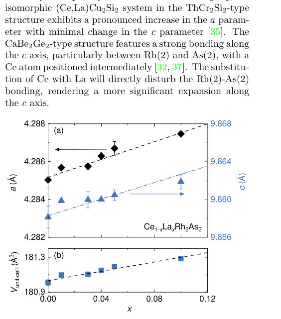
<figcaption class="paper-figure-caption"><b>Fig 1.</b> FIG. 1. La-concentration (x) dependence of (a) the tetragonal unit-cell lattice parameters, a and c, and (b) the calculated unit-cell volume, Vunit−cell.</figcaption>
</figure>
<figure class="paper-figure-card">
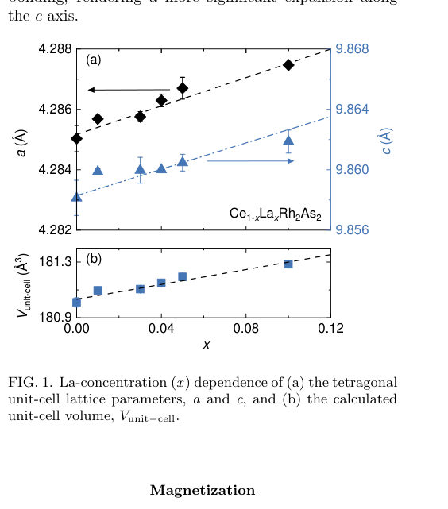
<figcaption class="paper-figure-caption"><b>Fig 2.</b> Figure 2 depicts the temperature-dependent inverse magnetic susceptibility data of the x = 0.1 sample, the highest La concentration studied. To access the impact of the La substitution on the local magnetic state of Ce, we focus on this sample representing the most significant chemical perturbation in our compounds studied. Above 100 K, the linear slopes of the Curie-Weiss behavior are</figcaption>
</figure>
<figure class="paper-figure-card">
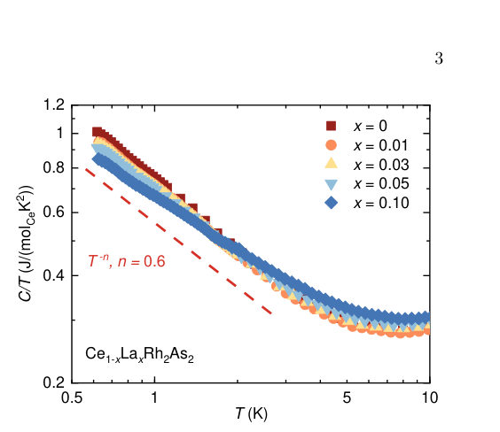
<figcaption class="paper-figure-caption"><b>Fig 3.</b> FIG. 3. Specific heat divided by temperature for different La concentrations, x. C/T was normalized by the Ce concentra- tion determined by EDX (1-xedx).</figcaption>
</figure>
<figure class="paper-figure-card">

<figcaption class="paper-figure-caption"><b>Fig 4.</b> FIG. 2. Temperature dependence of the inverse magnetic sus- ceptibility (χ) after subtracting a temperature-independent term (χ0) for in-plane (H ∥ab, red open squares) and c-axis (H ∥c, blue open circles) magnetic field, respectively. The magnetic susceptibility per Ce is obtained by normalization using the xEDX value. The solid lines denote the magnetic- susceptibility data of pristine CeRh2As2, reported earlier [1]. The slope of the linear dashed line stands for 2.56 µB/Ce, which is the expected effective moment of the Ce3+ valence state.</figcaption>
</figure>
<figure class="paper-figure-card">
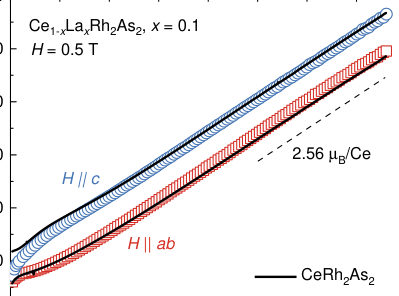
<figcaption class="paper-figure-caption"><b>Fig 5.</b> Figure 3 shows the temperature dependence of the spe- cific heat divided by temperature, C/T, for various x. Since the La substitution is expected to minimally affect the lattice-phonon contribution, the observed evolution</figcaption>
</figure>
</div>
<p><strong>Summary.</strong> This work systematically studies the effect of La substitution on the heavy-fermion superconductor CeRh2As2. By measuring transport and magnetic properties, the authors find that while the electronic state remains largely intact, the superconducting and magnetic ordering temperatures are rapidly suppressed. This suppression is primarily attributed to disorder-induced pair breaking, offering insights into the nature of unconventional superconductivity in correlated materials.</p>
<p><strong>Why it may be interesting.</strong> The clear demonstration that disorder (from substitution) can suppress superconductivity in a manner distinct from hydrostatic pressure provides a powerful experimental tool for understanding unconventional pairing mechanisms in correlated electron systems.</p>
<details>
<summary>Detailed structure</summary>
<p><strong>Main problem.</strong> The study investigates how substituting Cerium (Ce) with Lanthanum (La) affects the low-temperature superconducting and magnetic phases in the heavy-fermion superconductor CeRh2As2.</p>
<p><strong>Main result.</strong> La substitution rapidly suppresses both the superconducting transition temperature (Tc) and the magnetic ordering temperature (T0), suggesting that disorder-induced pair breaking is the dominant mechanism, rather than simple lattice expansion effects.</p>
<p><strong>Method.</strong> The research employed single-crystal measurements, including electrical resistivity, specific heat, and magnetic susceptibility, complemented by theoretical modeling using the Abrikosov-Gor'kov formalism and Crystal Electric Field (CEF) theory.</p>
<p><strong>Model / system.</strong> The system is the heavy-fermion superconductor CeRh2As2 and its doped derivative Ce(1-x)La(x)Rh2As2. The physics is governed by the interplay between localized Ce 4f moments and itinerant conduction electrons, characteristic of heavy fermion behavior.</p>
<p><strong>Key observables.</strong> Superconducting transition temperatures (Tc, T0), resistivity coherence maximum (T*max), specific heat divided by temperature (C/T), and magnetic susceptibility ($\chi$).</p>
<p><strong>Important parameters / regimes.</strong> La concentration (x up to 0.1), effective negative pressure (-0.3 GPa), Kondo energy scale, and superconducting gap anisotropy parameters.</p>
<p><strong>Assumptions / limitations.</strong> The rapid suppression of Tc is attributed to substitution-induced disorder causing strong pair breaking, and the analysis relies on fitting magnetic data to CEF models.</p>
<p><strong>Figures summary.</strong> Figures show the monotonic increase of lattice parameters with La substitution, the suppression of T*max, Tc, and T0 with increasing x, and the evolution of C/T vs. T, illustrating the impact of disorder.</p>
<p><strong>Paper structure.</strong> The paper systematically examines the structural changes (lattice parameters), electronic state preservation (valence, non-Fermi liquid behavior), and the dramatic suppression of superconducting and magnetic ordering temperatures as a function of La doping concentration.</p>
</details>
<details>
<summary>Abstract</summary>
<p>CeRh$_2$As$_2$ has been receiving considerable attention due to its unusual two-phase superconductivity. The superconducting (SC) phase appears at $T_{\mathrm{c}}$ = 0.35 K in an ordered state (phase I) of the Ce-4$f$ moments, which develops below $T_{\mathrm{0}}$ = 0.55 K. The microscopic nature of phase I has not been fully established yet. We report a single-crystal study of the effect of La substitution on these low-temperature phases in Ce$_{1-\textit{x}}$La$_\textit{x}$Rh$_2$As$_2$ up to $x$ = 0.1. The lattice parameters increase monotonically with $x$, corresponding to an effective negative pressure of approximately -0.3 GPa for $x$ = 0.1. While the Ce$^{3+}$ local valence state and the non-Fermi-liquid behavior are preserved, the resistivity coherence maximum $T^{*}_{\mathrm{max}}$ $\approx$ 45 K in the pristine sample shifts to lower temperatures with increasing $x$, indicating a suppression of the Kondo energy scale upon lattice expansion. On the other hand, both $T_{\mathrm{c}}$ and $T_{\mathrm{0}}$ are rapidly suppressed to below 0.1 K for $x$ $>$ 0.05. Notably, such a rapid decrease of $T_{\mathrm{c}}$ under moderate negative pressure is unexpected, but is rather consistent with substitution-induced disorder effect which leads to strong pair breaking in unconventional superconductors. The observed fragility of phase I under both pressure and disorder may imply its itinerant origin.</p>
</details>
<p><sub><a href="#top">↑ back to top</a></sub></p>

<p><a id="paper-2609.16208"></a></p>
<h3 id="link-middle-cut-lower-bounds-for-clifford-circuit-synthesis"><a href="http://arxiv.org/abs/2609.16208v1">Link-middle-cut lower bounds for Clifford circuit synthesis</a></h3>
<p><strong>Authors:</strong> Søren Fuglede Jørgensen<br>
<strong>Type:</strong> theory · <strong>Category:</strong> quantum information and computing · <strong>PDF:</strong> <a href="https://arxiv.org/pdf/2609.16208v1">https://arxiv.org/pdf/2609.16208v1</a><br>
<strong>Analysis basis:</strong> full PDF text, analyzed in chunks</p>
<div class="figure-strip-hint">↔ Scroll figures horizontally</div>
<div class="paper-figures-scroll">
<figure class="paper-figure-card">
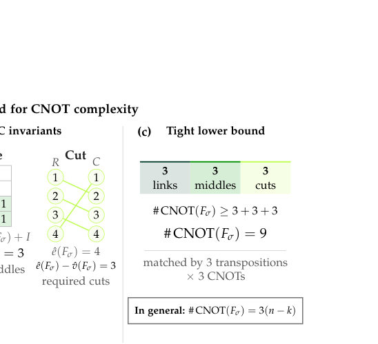
<figcaption class="paper-figure-caption"><b>Fig 1.</b> Figure 1. The link–middle–cut bound for Clifford operators and its tightness for permutations. (a) The binary symplectic tableau is partitioned into 2 × 2 blocks asso- ciated with pairs of input and output qubits; the example is the four-cycle σ = (1234). (b) Three efficiently computable invariants give lower bounds on mutually disjoint classes of CNOT gates. The link and cut invariants count connected components (de- noted ˆv and ˆe) of graphs constructed from the symplectic tableau. In this example, ˆv(Fσ) = 1 and ˆe(Fσ) = 4, and the bounds say that synthesis requires n −ˆv(Fσ) = 3 “link” CNOTs and ˆe(Fσ) −ˆv(Fσ) = 3 “cut” CNOTs. The middle invariant is obtained as the rank of the matrix...</figcaption>
</figure>
</div>
<p><strong>Summary.</strong> This paper develops advanced mathematical tools to find lower bounds on the minimum number of CNOT gates needed to implement any Clifford quantum circuit. By extending the Link-Middle-Cut framework to use symplectic tableaux, the authors derive multiple, computable invariants. These bounds are shown to be tight for simple cases like qubit permutations and significantly improve heuristic search algorithms for quantum circuit optimization.</p>
<p><strong>Why it may be interesting.</strong> The rigorous mathematical tools developed (LMC extension, determinantal invariants) provide powerful, computable lower bounds for circuit synthesis, which is fundamental to understanding the efficiency limits of quantum computation.</p>
<details>
<summary>Detailed structure</summary>
<p><strong>Main problem.</strong> The central problem is minimizing the number of CNOT gates required to synthesize a given Clifford operator on $n$ qubits.</p>
<p><strong>Main result.</strong> The authors derive efficiently computable lower bounds for the CNOT complexity using an extension of the Link-Middle-Cut (LMC) framework, proving tightness for qubit permutations as $3(n-k)$.</p>
<p><strong>Method.</strong> The method extends the LMC framework by mapping the problem to symplectic tableaux and introducing block-support connectivity graphs and determinantal invariants to establish rigorous lower bounds.</p>
<p><strong>Model / system.</strong> The system is an $n$-qubit quantum circuit implementing Clifford operators, which are analyzed using the mathematical structure of the symplectic group $   ext{Sp}_{2n}(\mathbb{F}_2)$ via symplectic tableaux.</p>
<p><strong>Key observables.</strong> CNOT-complexity (minimum CNOT count), link/cut invariants ($\hat{v}(F), \hat{e}(F)$), and determinantal invariants ($   ext{rank}(M(F) + I_n)$).</p>
<p><strong>Important parameters / regimes.</strong> Number of qubits ($n$) and the number of cycles ($k$) in the corresponding permutation.</p>
<p><strong>Assumptions / limitations.</strong> The analysis assumes the ability to extend the LMC framework from CNOT-only circuits to general Clifford operators, and it addresses the case where output qubit relabeling is free.</p>
<p><strong>Figures summary.</strong> Figure 1 illustrates the link–middle–cut bound for a four-cycle permutation, explicitly calculating the required links, middles, and cuts to match the known lower bound of 9 CNOT gates.</p>
<p><strong>Paper structure.</strong> The paper develops the theory by first extending the LMC framework to Clifford operators using symplectic tableaux. It then derives multiple, efficiently computable lower bounds based on graph invariants (links/cuts) and determinantal invariants (middle contribution). Finally, it demonstrates the utility of these bounds by using them as an admissible heuristic in an A*-based search algorithm.</p>
</details>
<details>
<summary>Abstract</summary>
<p>Minimizing the number of CNOT gates required to synthesize a Clifford operator is a central problem in quantum circuit optimization. We extend the link--middle--cut (LMC) framework for linear reversible circuits to Clifford operators represented by binary symplectic tableaux. By introducing block-support connectivity graphs and determinantal invariants, we obtain efficiently computable lower bounds on ancilla-free CNOT complexity. We prove that these bounds are tight for qubit permutations: a permutation of $n$ qubits with $k$ cycles requires exactly $3(n-k)$ CNOT gates, even when arbitrary one-qubit Clifford gates are available. We also derive efficiently computable bounds for synthesis up to a permutation of the output qubits, corresponding to free qubit relabeling. Finally, we further demonstrate the utility of the bound by using it as an admissible heuristic for $A^*$-based Clifford synthesis and show that, on benchmark instances, the resulting search can prove optimality beyond what was possible with earlier SAT-based methods, and that it may be used in combination with earlier $A^*$ heuristics to improve the CNOT counts obtained through heuristic search.</p>
</details>
<p><sub><a href="#top">↑ back to top</a></sub></p>

<p><a id="paper-2609.17001"></a></p>
<h3 id="nonlinear-hall-effect-in-altermagnetic-warped-topological-insulators"><a href="http://arxiv.org/abs/2609.17001v1">Nonlinear Hall Effect in Altermagnetic Warped Topological Insulators</a></h3>
<p><strong>Authors:</strong> Debashree Chowdhury<br>
<strong>Type:</strong> theory · <strong>Category:</strong> other · <strong>PDF:</strong> <a href="https://arxiv.org/pdf/2609.17001v1">https://arxiv.org/pdf/2609.17001v1</a><br>
<strong>Analysis basis:</strong> full PDF text, analyzed in chunks</p>
<div class="figure-strip-hint">↔ Scroll figures horizontally</div>
<div class="paper-figures-scroll">
<figure class="paper-figure-card">
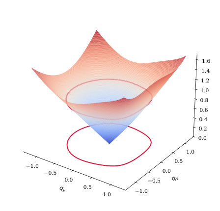
<figcaption class="paper-figure-caption"><b>Fig 1.</b> FIG. 1. Schematic 3D energy dispersion E+(q) exhibiting anisotropic warping under C3v symmetry and d-wave spin splitting (JAM) with ϕ = 0. The broken mirror symmetry My leads to an asymmetric Fermi surface contour (red line) at chemical potential µ.</figcaption>
</figure>
<figure class="paper-figure-card">
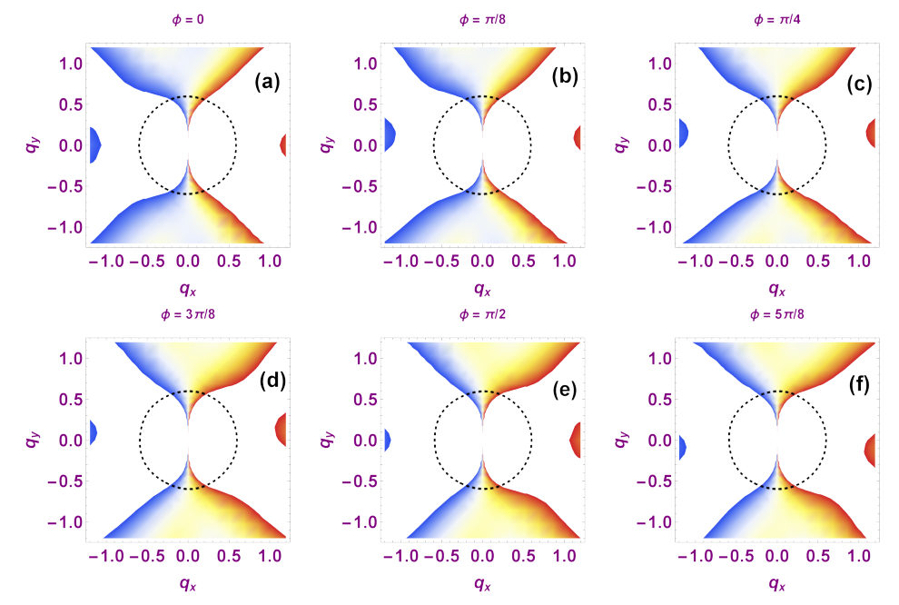
<figcaption class="paper-figure-caption"><b>Fig 2.</b> FIG. 2. 2D momentum-space distribution of the quantum metric dipole integrand I(q) = vxGyy −vyGxy with overlaid Fermi surface contours (dashed black lines) at chemical potential µ = 0.6. The subpanels show orientation angles (a) ϕ = 0, (b) ϕ = π/8, (c) ϕ = π/4, (d) ϕ = 3π/8, (e) ϕ = π/2, and (f) ϕ = 5π/8. At ϕ = 0, My mirror symmetry breaking generates an asymmetric distribution of positive and negative hotspots, yielding a net positive DQM. As ϕ approaches π/4, diagonal mirror symmetry Mxy renders the integrand strictly anti-symmetric across complementary quadrants, forcing DQM = 0. For ϕ &gt; π/4, the relative sign of the geometric hotspots inverts, reaching a maximum negative dipole...</figcaption>
</figure>
<figure class="paper-figure-card">
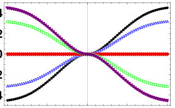
<figcaption class="paper-figure-caption"><b>Fig 3.</b> FIG. 3. Quantum metric dipole DQM as a function of the chemical potential µ for various orientation an- gles ϕ of the d-wave altermagnetic order parameter (ϕ = 0, π/8, π/4, 3π/8, π/2) is plotted. The quantum metric dipole vanishes identically at the charge neutrality point (µ = 0) and exhibits odd parity under chemical potential inversion, DQM(−µ) = −DQM(µ). Due to spatial mirror symmetries, DQM reaches its maximum magnitude near ϕ = 0 (dx2−y2- wave altermagnetism) and vanishes completely at ϕ = π/4 (dxy-type splitting).</figcaption>
</figure>
<figure class="paper-figure-card">
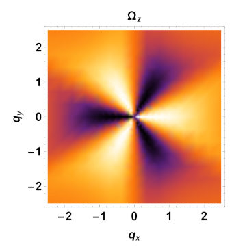
<figcaption class="paper-figure-caption"><b>Fig 4.</b> FIG. 4. Berry curvature Ωz(qx, qy) is presented with qx and qy for a hexagonally warped TI surface state in the absence of altermagnetism. The distribution exhibits a clear six-fold pattern respecting spatial mirror symmetry My, which en- forces exact cancellation across the Fermi surface and results in a vanishing net Berry curvature dipole.</figcaption>
</figure>
<figure class="paper-figure-card">
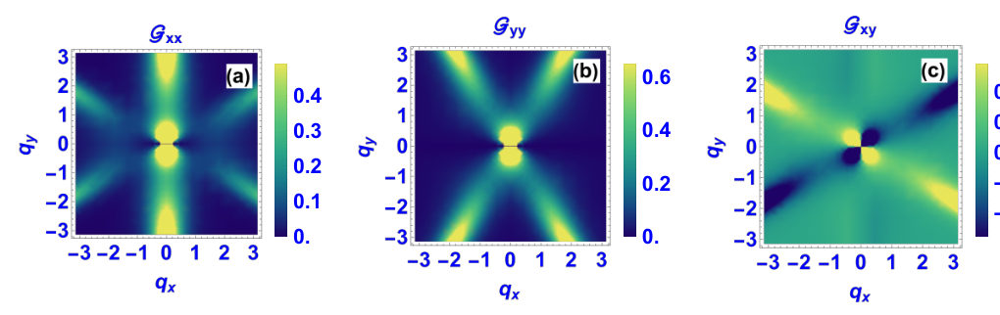
<figcaption class="paper-figure-caption"><b>Fig 5.</b> FIG. 5. Momentum-space distribution of the quantum metric tensor components for a hexagonally warped TI surface state in the absence of altermagnetism (a) Gxx, (b) Gyy, and (c) Gxy plotted against qx and qy. The preserved spatial mirror symmetry My enforces Gxx(qx, −qy) and Gxy(qx, −qy) to transform as even and odd respectively, resulting in a vanishing net quantum metric dipole.</figcaption>
</figure>
</div>
<p><strong>Summary.</strong> This theoretical work analyzes the nonlinear Hall effect in a hybrid system combining a warped Topological Insulator and a d-wave altermagnet. By breaking spatial mirror symmetry, the authors show that the intrinsic quantum metric dipole (DQM) becomes the dominant, measurable source of the non-linear response. This DQM is highly tunable via the relative angle of the altermagnetic order parameter, suggesting a new spintronic control mechanism.</p>
<p><strong>Why it may be interesting.</strong> The explicit connection between magnetic symmetry breaking (altermagnetism) and measurable quantum geometric responses (DQM) provides a clean, tunable platform for studying topological transport effects, which is relevant to understanding exotic quantum states in condensed matter.</p>
<details>
<summary>Detailed structure</summary>
<p><strong>Main problem.</strong> The paper investigates the origin and tunability of the nonlinear Hall effect in topological insulators coupled to altermagnets, aiming to isolate intrinsic quantum geometric contributions.</p>
<p><strong>Main result.</strong> The intrinsic quantum metric dipole (DQM) drives the non-linear Hall response, and its magnitude and sign can be continuously tuned by rotating the altermagnetic orientation angle φ.</p>
<p><strong>Method.</strong> The analysis involves deriving the Berry curvature and the quantum metric tensor components, followed by calculating the DQM via a Fermi surface line integral.</p>
<p><strong>Model / system.</strong> The model is a hexagonally warped Topological Insulator (TI) surface state proximity-coupled to a d-wave altermagnet. The system is described by an effective continuum Hamiltonian incorporating warping and d-wave splitting terms.</p>
<p><strong>Key observables.</strong> Nonlinear Hall conductivities, Berry curvature dipole (DBC), and the intrinsic quantum metric dipole (DQM).</p>
<p><strong>Important parameters / regimes.</strong> The relative orientation angle φ of the altermagnetic order parameter, and the chemical potential $\mu$ (where the response vanishes at $\mu=0$).</p>
<p><strong>Assumptions / limitations.</strong> The analysis assumes the unperturbed system possesses Time-Reversal and Spatial Mirror symmetries, leading to zero net dipoles, which are then broken by the altermagnetic coupling.</p>
<p><strong>Figures summary.</strong> Figures illustrate the anisotropic energy dispersion showing warping and d-wave splitting, and the momentum-space distribution of the DQM integrand.</p>
<p><strong>Paper structure.</strong> The paper establishes the physical model and symmetry constraints, derives the relevant geometric tensors (Berry curvature, metric tensor), and then analyzes how symmetry breaking via the altermagnetism allows for a finite, tunable DQM that dictates the non-linear Hall response.</p>
</details>
<details>
<summary>Abstract</summary>
<p>Low-dimensional Dirac systems offer a versatile platform for quantum-geometric non-linear transport. Hexagonal warping in topological insulator (TI) surface states generates rich momentum-space geometric textures. However, mirror and time-reversal symmetries strictly constrain both the Berry curvature and quantum metric dipoles to zero. Here, we show that proximity-coupling a hexagonally warped TI to a d-wave altermagnet lifts spatial mirror symmetry via the interplay of C_{3v} warping and d-wave spin-splitting. This symmetry breaking enables finite Berry curvature dipole components, which, however, remain heavily suppressed near charge neutrality, establishing the intrinsic quantum metric dipole as the sole driver of the non-linear Hall response. This scattering-independent response vanishes at μ= 0 and exhibits odd parity under chemical potential inversion. Importantly, rotating the altermagnetic orientation angle φcontinuously tunes quantum metric dipole and induces a sign reversal, peaking near φ=0 and vanishing at φ= π/4. Our findings highlight TI-altermagnet interfaces as ideal candidates for gate- and orientation-tunable quantum metric spintronics.</p>
</details>
<p><sub><a href="#top">↑ back to top</a></sub></p>

<p><a id="paper-2609.17166"></a></p>
<h3 id="numerical-study-of-stability-of-clean-critical-points-across-aperiodic-topological-and-uncorrelated-disorder"><a href="http://arxiv.org/abs/2609.17166v1">Numerical Study of Stability of Clean Critical Points across Aperiodic, Topological, and Uncorrelated Disorder</a></h3>
<p><strong>Authors:</strong> Shuhao Fan, Lu Liu, Wenan Guo<br>
<strong>Type:</strong> theory · <strong>Category:</strong> statistical mechanics · <strong>PDF:</strong> <a href="https://arxiv.org/pdf/2609.17166v1">https://arxiv.org/pdf/2609.17166v1</a><br>
<strong>Analysis basis:</strong> full PDF text, analyzed in chunks</p>
<div class="figure-strip-hint">↔ Scroll figures horizontally</div>
<div class="paper-figures-scroll">
<figure class="paper-figure-card">
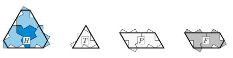
<figcaption class="paper-figure-caption"><b>Fig 1.</b> FIG. 1: Metatiles (H, T, P, F) used in the substitution[20].</figcaption>
</figure>
<figure class="paper-figure-card">
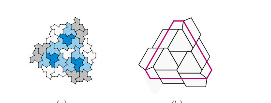
<figcaption class="paper-figure-caption"><b>Fig 2.</b> FIG. 2: (a) A patch of the Smith hat lattice. Each tile consists of 14 sites, with spins (black circles) placed at the vertices. (b) A geometric substitution system for H metatile based on metatiles[20].</figcaption>
</figure>
<figure class="paper-figure-card">
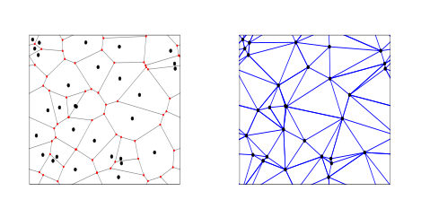
<figcaption class="paper-figure-caption"><b>Fig 3.</b> FIG. 3: Illustration of the VD lattice construction. (a) The plane is partitioned into Voronoi cells (polygons) around a set of random points (seeds). (b) The Delaunay triangulation, which is the dual graph of the Voronoi tessellation, forms the lattice for the spin model. The vertices of the triangles (the original seeds) are the spin sites, and the edges define the nearest-neighbor bonds.</figcaption>
</figure>
<figure class="paper-figure-card">
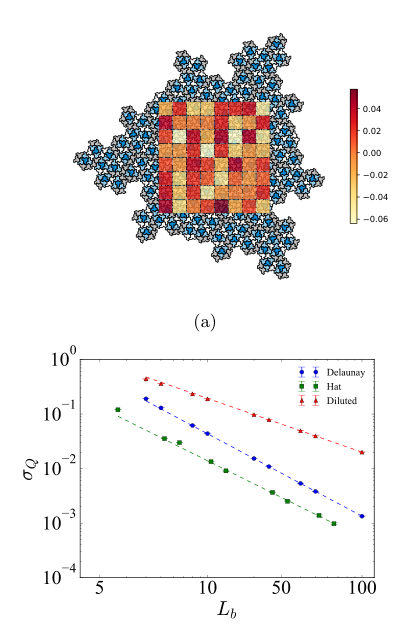
<figcaption class="paper-figure-caption"><b>Fig 4.</b> FIG. 4: (a) Spatial map of Qµ −¯z for Lb = 8 blocks on the Smith-hat lattice; the color encodes each block’s deviation from the global mean, whose mean square gives the variance σ2 Q. (b) Log-log plot of σQ(Lb) versus Lb for the three lattices. Dashed lines are power-law fits σQ ∼L−α b , yielding α = 1.51(1) (VD), 1.41(12) (Smith-hat), and 0.98(1) (diluted, p = 0.75).</figcaption>
</figure>
<figure class="paper-figure-card">
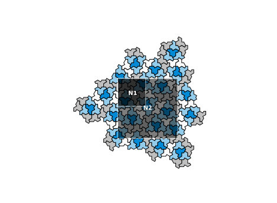
<figcaption class="paper-figure-caption"><b>Fig 5.</b> FIG. 5: Schematic of the sample extraction method for the Smith-hat lattice. To circumvent the sparse set of system sizes from hierarchical generation, we first generate a very large H-type patch, then extract multiple square windows of varying sizes to serve as our simulation lattices.</figcaption>
</figure>
</div>
<p><strong>Summary.</strong> This study investigates how structural disorder—aperiodic, topological, or random—affects the critical behavior of the 2D Ashkin-Teller model. By comparing results against the Harris and HBV criteria, the authors show that geometrically constrained disorder preserves clean critical exponents, while uncorrelated disorder causes a breakdown of this clean behavior.</p>
<p><strong>Why it may be interesting.</strong> This work provides a rigorous testbed for modern critical phenomena theory, specifically comparing the predictive power of the Harris criterion against the HBV criterion in geometrically constrained or disordered systems, which has implications for understanding complex materials.</p>
<details>
<summary>Detailed structure</summary>
<p><strong>Main problem.</strong> The study investigates the stability of clean critical behavior in the Ashkin-Teller model when subjected to three distinct types of structural disorder: aperiodic, topological, and uncorrelated.</p>
<p><strong>Main result.</strong> The critical behavior remains stable and consistent with the clean AT universality class for aperiodic (Smith-hat) and topological (VD) lattices, satisfying the HBV criterion. Conversely, the uncorrelated (diluted) lattice shows a crossover to a disorder-dominated fixed line, consistent with the Harris criterion.</p>
<p><strong>Method.</strong> The research employs Finite-Size Scaling (FSS) analysis on Monte Carlo simulations to determine critical exponents ($
u, \eta_h, \eta_p$) and characterizes disorder using the decay exponent ($\alpha$) of the block-averaged coordination fluctuation ($\sigma_Q$).</p>
<p><strong>Model / system.</strong> The system is the two-dimensional Ashkin-Teller (AT) model, analyzed on lattices including the Smith-hat aperiodic tiling, Voronoi-Delaunay (VD) random triangulations, and site-diluted square lattices. The Hamiltonian involves two Ising variables per site.</p>
<p><strong>Key observables.</strong> Critical exponents ($
u, \eta_h, \eta_p$), coordination fluctuation decay exponent ($\alpha$), and the Binder cumulant ($U_m$).</p>
<p><strong>Important parameters / regimes.</strong> The disorder strength parameter ($J_4$) and the occupation probability ($p$) for site dilution are key parameters governing the crossover regimes.</p>
<p><strong>Assumptions / limitations.</strong> The analysis relies on comparing numerical results against predictions from the Harris and Harris-Barghathi-Vojta (HBV) criteria, and assumes the applicability of the Coulomb-gas self-consistency check for clean universality.</p>
<p><strong>Figures summary.</strong> Figures illustrate the construction of the Smith-hat and VD lattices, and the analysis uses Binder cumulants ($U_m$) to locate critical points and determine exponents.</p>
<p><strong>Paper structure.</strong> The paper systematically compares the critical behavior across the three disorder types, using the coordination fluctuation exponent ($\alpha$) to characterize disorder, and then applying FSS and theoretical criteria (Harris vs. HBV) to determine if the clean critical exponents are preserved.</p>
</details>
<details>
<summary>Abstract</summary>
<p>Using the two-dimensional Ashkin-Teller (AT) model, we compare criticality on three non-periodic lattices: the Smith-hat aperiodic tiling, Voronoi-Delaunay (VD) random triangulations, and uncorrelated diluted square lattices. The decay of the block-averaged coordination fluctuation $σ_Q$ with exponent $α$ is used to describe the connectivity disorder. The first two lattices share the same exponent $α$, which differs from that of the third. We consider the regime where the correlation-length exponent $ν<1$, where randomness is relevant according to the Harris criterion $d ν\le 2$, but should be irrelevant in cases of the Smith-hat tiling and VD triangulations, where $αν>1$, according to the Harris--Barghathi--Vojta (HBV) criterion. For the diluted lattice, we indeed find that the clean universality behavior breaks down along the entire critical line, indicating a crossover to a fixed line dominated by disorder, in line with both the Harris criterion and the HBV criterion. In contrast, both VD and Smith-hat lattices display critical exponents consistent with the clean AT universality class, as validated by a Coulomb-gas self-consistency check, violating the Harris criterion while conforming to the HBV criterion.</p>
</details>
<p><sub><a href="#top">↑ back to top</a></sub></p>

<p><a id="paper-2609.17457"></a></p>
<h3 id="one-gate-at-a-time-complexity-growth-in-random-quantum-circuits"><a href="http://arxiv.org/abs/2609.17457v1">One Gate at a Time: Complexity Growth in Random Quantum Circuits</a></h3>
<p><strong>Authors:</strong> Zhi Li<br>
<strong>Type:</strong> theory · <strong>Category:</strong> quantum information and computing · <strong>PDF:</strong> <a href="https://arxiv.org/pdf/2609.17457v1">https://arxiv.org/pdf/2609.17457v1</a><br>
<strong>Analysis basis:</strong> full PDF text, analyzed in chunks</p>
<div class="figure-strip-hint">↔ Scroll figures horizontally</div>
<div class="paper-figures-scroll">
<figure class="paper-figure-card">
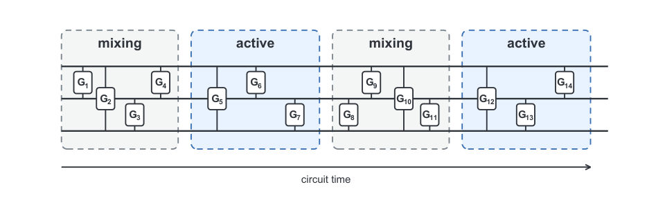
<figcaption class="paper-figure-caption"><b>Fig 1.</b> Figure 1: Schematic decomposition of the circuit into R blocks, each consisting of a mixing segment of length m followed by an active segment of length d. Thus, the total number of gates is T = (m+d)R.</figcaption>
</figure>
</div>
<p><strong>Summary.</strong> This paper analyzes the complexity of random quantum circuits, proving that the minimum number of gates needed to approximate the circuit's output grows almost linearly with time, $\Omega(T/\log T)$. It achieves this by developing novel techniques rooted in stochastic calculus and geometric functional analysis to establish strong small-ball estimates. This work significantly improves prior lower bounds on quantum circuit complexity.</p>
<p><strong>Why it may be interesting.</strong> The result provides a significantly improved lower bound on circuit complexity compared to previous methods, suggesting that random circuits mix rapidly and efficiently explore the unitary space, which is crucial for understanding quantum computation limits.</p>
<details>
<summary>Detailed structure</summary>
<p><strong>Main problem.</strong> The paper determines the growth rate of the constant-error circuit complexity required to approximate a random unitary quantum circuit.</p>
<p><strong>Main result.</strong> The constant-error circuit complexity for an all-to-all 2-local random unitary circuit grows almost linearly with time, specifically $\Omega(T / \log T)$, independent of the system size $n$ up to certain time scales.</p>
<p><strong>Method.</strong> The analysis combines geometric functional analysis, stochastic calculus (using Itô's formula), and $\epsilon$-net arguments applied to small-ball estimates for the unitary group.</p>
<p><strong>Model / system.</strong> The study focuses on random unitary quantum circuits, including the all-to-all 2-local random unitary circuit and the random Pauli rotations model, operating on a Hilbert space of dimension $D=2^n$.</p>
<p><strong>Key observables.</strong> Constant-error circuit complexity $C_\epsilon(U)$, the normalized Hilbert-Schmidt distance $d_2(U, V)$, and the overlap function $ ext{Re}     ext{Tr}(V^\dagger U(    heta))$.</p>
<p><strong>Important parameters / regimes.</strong> Time $T$ (number of gates), system size $n$, and the error tolerance $\epsilon$ (e.g., $\epsilon=1/2$).</p>
<p><strong>Assumptions / limitations.</strong> The approach avoids relying on spectral gaps or unitary designs, instead deriving bounds from small-ball estimates related to the circuit's exploration of the unitary group.</p>
<p><strong>Figures summary.</strong> Figure 1 schematically decomposes the circuit into blocks, showing mixing and active segments, relating total time $T$ to the number of segments $R$.</p>
<p><strong>Paper structure.</strong> The paper builds from establishing small-ball estimates for the distance between the random circuit output and any fixed unitary (using stochastic calculus on the overlap function) to deriving the final complexity lower bounds via $\epsilon$-net arguments.</p>
</details>
<details>
<summary>Abstract</summary>
<p>A random unitary quantum circuit is expected to be incompressible for exponentially long times. We show that the constant-error circuit complexity of a random unitary circuit grows almost linearly with time as $Ω(T/\log T)$. The bound holds for all $2\leq T\leq 4^n$ where $n$ is the system size, and involves no other $n$-dependence. This improves previous lower bounds derived from spectral gaps and unitary designs by a factor of $\mathrm{poly}(n)$. Drawing on insights from stochastic calculus, geometric functional analysis, and randomized linear algebra, our approach exploits the circuit's response to variations of individual gates and requires no control over convergence to high-order unitary designs.</p>
</details>
<p><sub><a href="#top">↑ back to top</a></sub></p>

<p><a id="paper-2609.16530"></a></p>
<h3 id="orbital-resolved-superexchange-and-topological-magnon-bands-in-mxene-femath947mathc"><a href="http://arxiv.org/abs/2609.16530v1">Orbital-resolved superexchange and topological magnon bands in MXene Fe$_2$C</a></h3>
<p><strong>Authors:</strong> Qiang Gao, Wei Wang, Shaojin Qi, Guimei Shi, Anbang Guo, Xin Jin, Chen Shen, Xing-Qiu Chen<br>
<strong>Type:</strong> theory · <strong>Category:</strong> strongly correlated electrons · <strong>PDF:</strong> <a href="https://arxiv.org/pdf/2609.16530v1">https://arxiv.org/pdf/2609.16530v1</a><br>
<strong>Analysis basis:</strong> full PDF text, analyzed in chunks</p>
<div class="figure-strip-hint">↔ Scroll figures horizontally</div>
<div class="paper-figures-scroll">
<figure class="paper-figure-card">
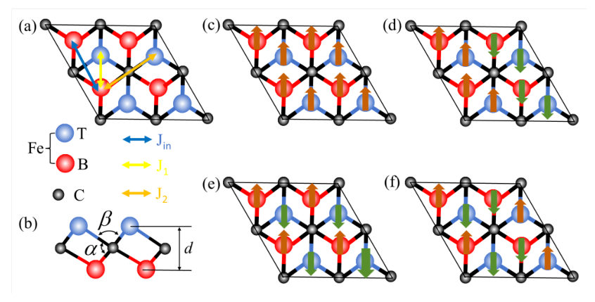
<figcaption class="paper-figure-caption"><b>Fig 1.</b> FIG. 1. The top (a) and side (b) views for the structure of MXene Fe2C. (c), (d), (e), and (f)</figcaption>
</figure>
<figure class="paper-figure-card">
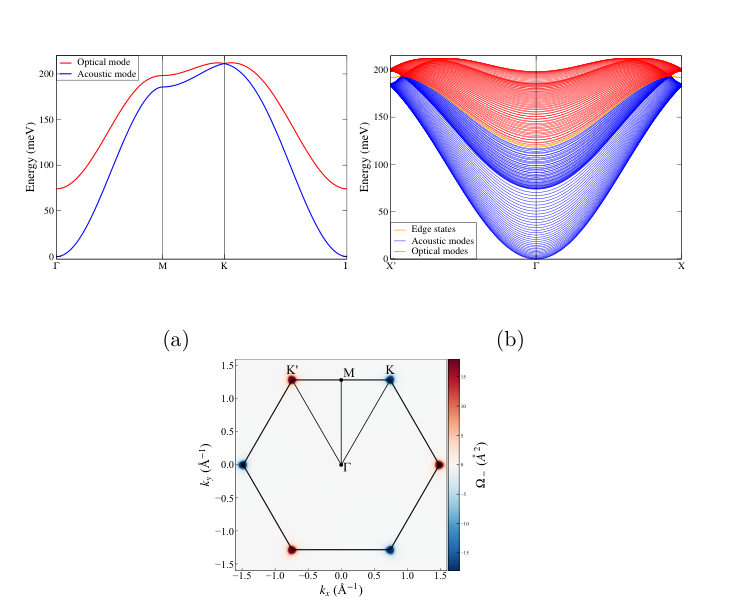
<figcaption class="paper-figure-caption"><b>Fig 2.</b> FIG. 2. (a) The magnon dispersion curves for MXene Fe2C. The blue and red curves represent the</figcaption>
</figure>
<figure class="paper-figure-card">
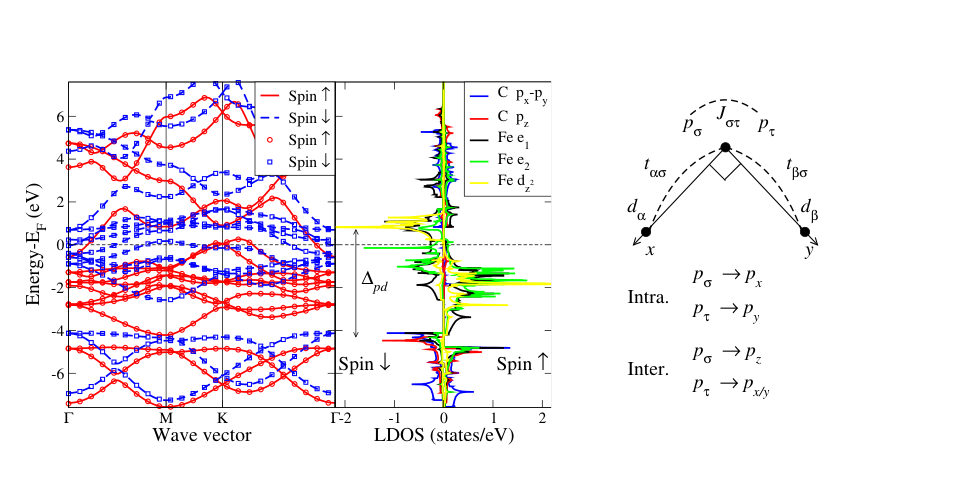
<figcaption class="paper-figure-caption"><b>Fig 3.</b> FIG. 3. (a) The band structures (left) for MXene Fe2C together with the local density of states</figcaption>
</figure>
</div>
<p><strong>Summary.</strong> This theoretical study investigates the magnetic excitations and topological properties of MXene Fe2C. It successfully links the microscopic superexchange mechanism, detailing how orbital overlaps govern the exchange coupling, to the macroscopic topological features of the magnon bands. This provides crucial theoretical guidance for designing next-generation spintronic materials.</p>
<p><strong>Why it may be interesting.</strong> The connection between orbital physics (superexchange) and topological band theory in a 2D magnetic material is highly relevant for understanding emergent quantum phenomena in condensed matter systems.</p>
<details>
<summary>Detailed structure</summary>
<p><strong>Main problem.</strong> The study aims to investigate the topological properties of magnon bands and the orbital-resolved superexchange mechanism in magnetic MXene Fe2C.</p>
<p><strong>Main result.</strong> The research establishes a direct link between the orbital-resolved anisotropic superexchange and the topological properties of magnon bands, identifying a Dirac point at the K point.</p>
<p><strong>Method.</strong> The authors employed the linear spin wave method, combined with first-principles calculations and a two-band model, to analyze the magnetic excitations and topology.</p>
<p><strong>Model / system.</strong> The physical system is the magnetic MXene Fe2C. The analysis models the magnetic interactions using a Heisenberg Hamiltonian, incorporating intralayer and interlayer exchange couplings derived from orbital-resolved superexchange paths.</p>
<p><strong>Key observables.</strong> Spin wave dispersions, Berry curvature, valley Chern number, edge states, and the orbital-resolved anisotropic superexchange coupling.</p>
<p><strong>Important parameters / regimes.</strong> The interlayer exchange coupling is found to be stronger than the intralayer coupling, and the topology is protected by the C3v rotational symmetry.</p>
<p><strong>Assumptions / limitations.</strong> The analysis relies on the linear spin wave approximation and utilizes a two-band model for topological calculations.</p>
<p><strong>Figures summary.</strong> Figure 1 illustrates the structure of MXene Fe2C and different spin configurations; other figures likely show the magnon dispersion and topological band structures.</p>
<p><strong>Paper structure.</strong> The paper proceeds by first calculating spin wave dispersions using LSWT, then analyzing the topology via a two-band model, and finally deriving a refined model using perturbation theory and tight-binding to microscopically explain the orbital-resolved superexchange mechanism.</p>
</details>
<details>
<summary>Abstract</summary>
<p>Magnetic MXenes are promising candidates for future spintronics due to their intriguing properties. Nevertheless, the topological properties of magnon bands and superexchange mechanism remain relatively underexplored. In this work, we have calculated the spin wave dispersions for MXene Fe$_2$C using the linear spin wave method, with the exchange coupling parameters obtained from first-principles calculations. Owing to the staggered stacking of two Fe sub-lattices, the interlayer exchange coupling lifts the degeneracy of the ferromagnetic magnon modes. A Dirac point is identified in the magnon bands at the $K$ point. The topological properties of magnon bands, including Berry curvature, valley Chern number and edge states, are further computed by means of a two-band model. We also derive an effective Hamiltonian to explain the magnonic topology, which is protected by the $C_{3v}$ rotational symmetry. To understand the microscopic origin of the exchange couplings that govern the magnon bands, we then construct a refined model integrating perturbation theory and the tight-binding approach. The ferromagnetic superexchange coupling is mediated by the virtual hopping between the d orbitals of two distinct Fe sites via a pair of orthogonal p orbitals at the bridging C site. In detail, the intralayer exchange coupling is governed by the in-plane $p_x$ and $p_y$ orbitals, while the out-of-plane $p_z$ orbital is responsible for the interlayer exchange coupling. Our results establish a direct link between the orbital-resolved anisotropic superexchange and topological properties of the magnon bands in magnetic MXene Fe$_2$C, providing theoretical guidance for future spintronics applications.</p>
</details>
<p><sub><a href="#top">↑ back to top</a></sub></p>

<p><a id="paper-2609.16542"></a></p>
<h3 id="phantom-codes-hardness-rate-optimal-qldpc-constructions-and-distance-limits"><a href="http://arxiv.org/abs/2609.16542v1">Phantom Codes: Hardness, Rate Optimal qLDPC Constructions, and Distance Limits</a></h3>
<p><strong>Authors:</strong> Rui Mao, Weixiao Sun, Shengyu Zhang<br>
<strong>Type:</strong> theory · <strong>Category:</strong> quantum information and computing · <strong>PDF:</strong> <a href="https://arxiv.org/pdf/2609.16542v1">https://arxiv.org/pdf/2609.16542v1</a><br>
<strong>Analysis basis:</strong> full PDF text, analyzed in chunks</p>
<div class="figure-strip-hint">↔ Scroll figures horizontally</div>
<div class="paper-figures-scroll">
<figure class="paper-figure-card">
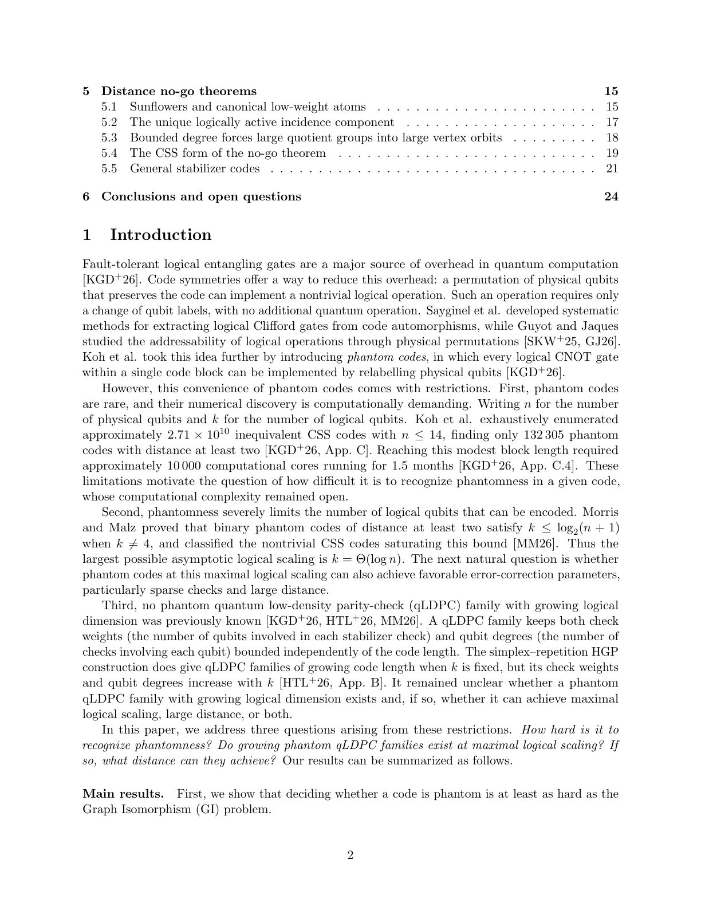
<figcaption class="paper-figure-caption"><b>Fig 1.</b> Low-resolution page preview, page 2</figcaption>
</figure>
<figure class="paper-figure-card">
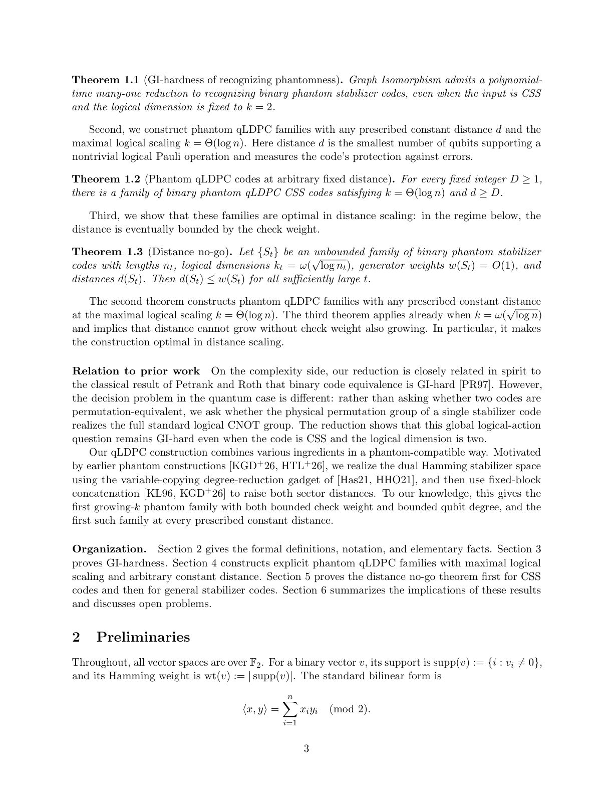
<figcaption class="paper-figure-caption"><b>Fig 2.</b> Low-resolution page preview, page 3</figcaption>
</figure>
<figure class="paper-figure-card">
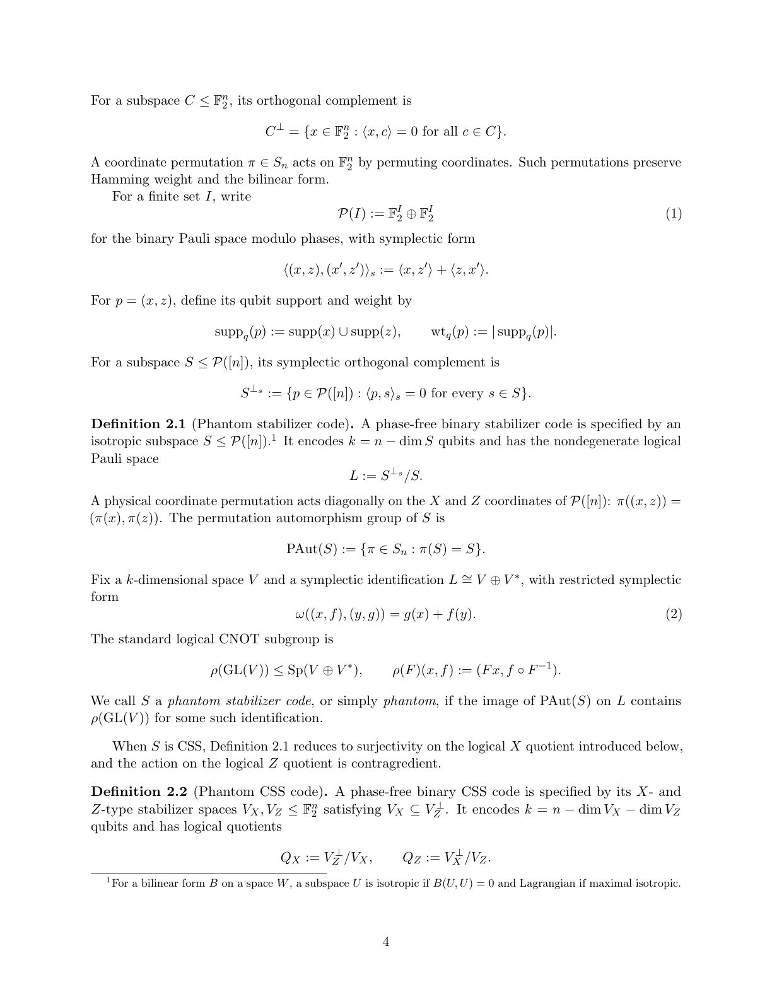
<figcaption class="paper-figure-caption"><b>Fig 3.</b> Low-resolution page preview, page 4</figcaption>
</figure>
<figure class="paper-figure-card">
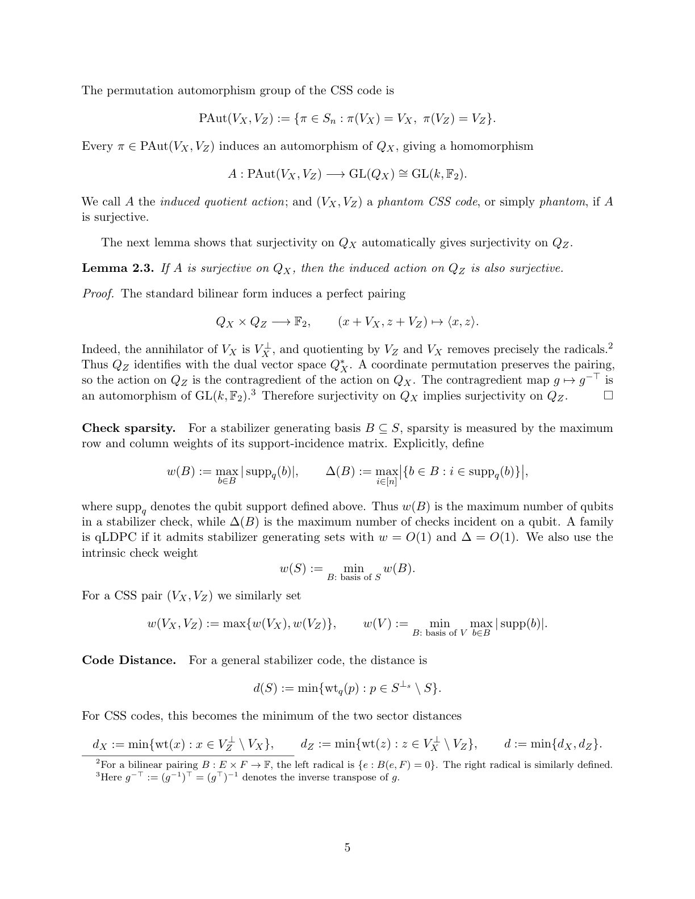
<figcaption class="paper-figure-caption"><b>Fig 4.</b> Low-resolution page preview, page 5</figcaption>
</figure>
<figure class="paper-figure-card">
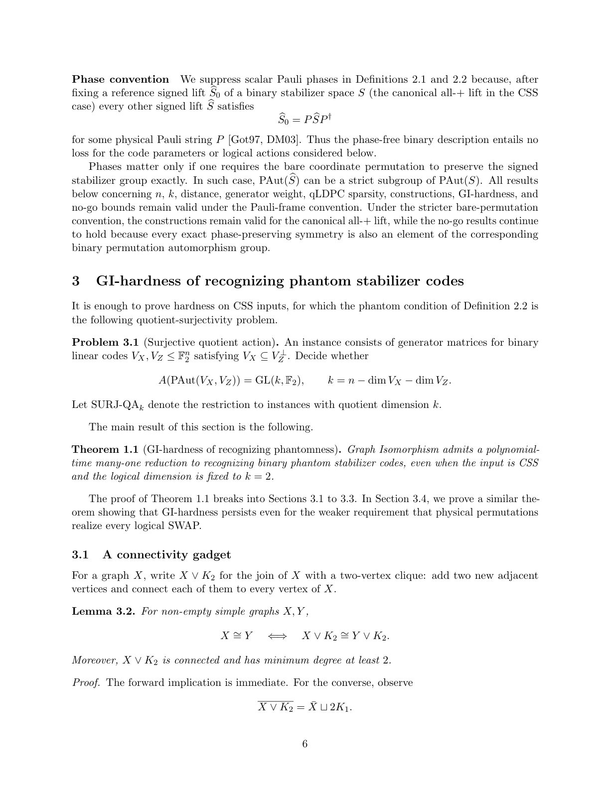
<figcaption class="paper-figure-caption"><b>Fig 5.</b> Low-resolution page preview, page 6</figcaption>
</figure>
</div>
<p><strong>Summary.</strong> This paper studies 'phantom codes,' a rare class of quantum error-correcting codes with special symmetry properties. The authors establish that determining if a code is phantom is computationally hard (GI-hard) and provide constructions for optimal families. Crucially, they prove a distance limit, showing that for codes with high logical dimension relative to their check weight, the distance must be severely constrained.</p>
<p><strong>Why it may be interesting.</strong> The connection between the algebraic structure of quantum error-correcting codes and computational complexity (GI) provides deep insights into the inherent limitations of quantum information processing.</p>
<details>
<summary>Detailed structure</summary>
<p><strong>Main problem.</strong> Characterizing 'phantom codes,' which are stabilizer codes where all logical CNOT gates can be realized by physical qubit permutations, and determining the inherent limitations on their parameters.</p>
<p><strong>Main result.</strong> The authors proved that recognizing phantomness is as hard as Graph Isomorphism, constructed rate-optimal phantom qLDPC families, and established a distance no-go theorem for such codes.</p>
<p><strong>Method.</strong> The work combines algebraic coding theory (stabilizer codes, CSS codes) with computational complexity theory (Graph Isomorphism reduction) and group theory (automorphism groups).</p>
<p><strong>Model / system.</strong> The model is the stabilizer code, specifically CSS codes, defined by their parameters $(n, k, d)$ and analyzed via their automorphism groups $  ext{PAut}(S)$.</p>
<p><strong>Key observables.</strong> Code parameters: physical length ($n$), logical dimension ($k$), distance ($d$), and check weight ($w$).</p>
<p><strong>Important parameters / regimes.</strong> The scaling of $k$ relative to $n$ (e.g., $k = \Theta(\log n)$ or $k = \omega(\sqrt{\log n})$) is critical for the theorems.</p>
<p><strong>Assumptions / limitations.</strong> The analysis often assumes the code is a binary CSS code and relies on the structure of the automorphism group action on the logical Pauli group.</p>
<p><strong>Paper structure.</strong> The paper progresses by first defining the phantom property, then proving the computational hardness (GI-hardness), followed by constructing optimal qLDPC families, and concluding with the distance no-go theorem.</p>
</details>
<details>
<summary>Abstract</summary>
<p>An $[[n,k,d]]$ stabilizer code is phantom if every in-block logical CNOT gate can be realized by a permutation of its physical qubits. This eliminates the large and complicated physical overhead normally required for logical entangling gates. Yet this symmetry is highly restrictive: phantom codes are rare, the number of logical qubits is limited to $k=O(\log n)$, and no phantom qLDPC family with growing logical dimension was previously known.   We make three contributions.   1. We prove that recognizing phantomness of a given stabilizer code is at least as hard as Graph Isomorphism, even for CSS codes encoding only $k=2$ logical qubits.   2. We propose the first rate optimal phantom qLDPC families: for every fixed $D$, our CSS families achieve the maximal logical scaling $k=Θ(\log n)$ and distance $d\geq D$.   3. We prove a distance no-go theorem: every phantom code family with $k=ω(\sqrt{\log n})$ and check weight $w=O(1)$ satisfies $d\leq w$ for sufficiently large $n$.   Thus our fixed-distance qLDPC families are distance-scaling optimal at the maximal logical scaling $k=Θ(\log n)$.</p>
</details>
<p><sub><a href="#top">↑ back to top</a></sub></p>

<p><a id="paper-2609.16712"></a></p>
<h3 id="phase-transition-in-binary-compressed-sensing-via-annealing-with-adaptive-regularization"><a href="http://arxiv.org/abs/2609.16712v1">Phase Transition in Binary Compressed Sensing via Annealing with Adaptive Regularization</a></h3>
<p><strong>Authors:</strong> Xiaoxin Huang, Masayuki Ohzeki<br>
<strong>Type:</strong> both · <strong>Category:</strong> numerical methods · <strong>PDF:</strong> <a href="https://arxiv.org/pdf/2609.16712v1">https://arxiv.org/pdf/2609.16712v1</a><br>
<strong>Analysis basis:</strong> full PDF text, analyzed in chunks</p>
<div class="figure-strip-hint">↔ Scroll figures horizontally</div>
<div class="paper-figures-scroll">
<figure class="paper-figure-card">
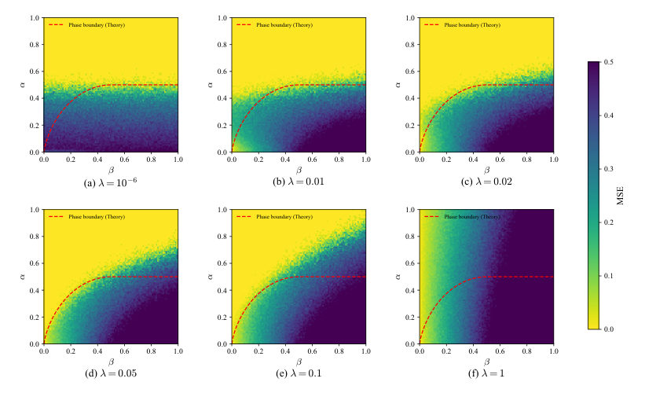
<figcaption class="paper-figure-caption"><b>Fig 1.</b> Fig. 1. SA reconstruction phase diagrams with fixed regularization at N = 100. Panels (a–f) use λ =</figcaption>
</figure>
<figure class="paper-figure-card">

<figcaption class="paper-figure-caption"><b>Fig 2.</b> Figure 4 shows SA recovery phase diagrams obtained with RF-predicted regularization</figcaption>
</figure>
<figure class="paper-figure-card">

<figcaption class="paper-figure-caption"><b>Fig 3.</b> Fig. 2. Empirical reference regularization maps and parameter correlations. Panels (a,b) show λ∗for N =</figcaption>
</figure>
<figure class="paper-figure-card">

<figcaption class="paper-figure-caption"><b>Fig 4.</b> Figure 5 compares SA, hybrid QA, and box-constrained BP on matched problem in-</figcaption>
</figure>
<figure class="paper-figure-card">

<figcaption class="paper-figure-caption"><b>Fig 5.</b> Fig. 3. Residual histograms for RF (light blue) and NN (orange), illustrated using a subset of the held-out</figcaption>
</figure>
</div>
<p><strong>Summary.</strong> This work tackles the parameter selection problem in Binary Compressed Sensing by developing a machine learning predictor to estimate the optimal regularization strength ($\lambda$). By training a Random Forest on systematic search results, the authors enable annealing-based solvers to achieve reconstructions that closely follow established theoretical recovery boundaries.</p>
<p><strong>Why it may be interesting.</strong> The integration of machine learning (Random Forest) to guide the parameter selection for quantum/optimization solvers is a powerful methodology for making quantum computation results more practical and transferable.</p>
<details>
<summary>Detailed structure</summary>
<p><strong>Main problem.</strong> The paper addresses the challenge of determining the optimal regularization parameter ($\lambda$) required for successful signal reconstruction in Binary Compressed Sensing (BCS).</p>
<p><strong>Main result.</strong> A data-driven prediction method, trained on systematic searches, successfully estimates the optimal $\lambda$, allowing reconstruction algorithms (SA and hybrid QA) to follow theoretical recovery boundaries.</p>
<p><strong>Method.</strong> The authors combine systematic parameter searching (using Simulated Annealing) to map out optimal $\lambda$ values ($\lambda^*$) and then train a Random Forest regression model to predict these values for new regimes.</p>
<p><strong>Model / system.</strong> The core problem is recovering a sparse binary signal $\mathbf{x} \in \{0, 1\}^N$ from measurements $\mathbf{y} = A\mathbf{x}$, formulated as minimizing a QUBO objective function. This is solved using annealing techniques (SA, QA) and classical solvers.</p>
<p><strong>Key observables.</strong> Mean Squared Reconstruction Error (MSE) per component, and the predicted regularization parameter $\hat{\lambda}$.</p>
<p><strong>Important parameters / regimes.</strong> Signal dimension ($N$), sampling ratio ($\alpha$), sparsity ($eta$), and the regularization parameter ($\lambda$).</p>
<p><strong>Assumptions / limitations.</strong> The results are empirical, based on a finite candidate grid for $\lambda$, and do not constitute a solver-independent recovery guarantee; the measurements are assumed noiseless Gaussian.</p>
<p><strong>Figures summary.</strong> Figures show phase diagrams mapping MSE across $(\alpha, eta)$ space, comparing results from fixed $\lambda$ versus predicted $\hat{\lambda}$ using SA and hybrid QA, relative to a theoretical recovery boundary.</p>
<p><strong>Paper structure.</strong> The paper first establishes the BCS problem and its QUBO formulation. It then details the two-stage process: (1) Empirical search to find $\lambda^*$, and (2) Training a predictor (RF) on these results. Finally, it compares reconstruction performance using the predicted $\hat{\lambda}$ against theoretical bounds and other solvers.</p>
</details>
<details>
<summary>Abstract</summary>
<p>Regularization choice changes the recovery phase diagrams of annealing-based binary compressed sensing. We develop a regularization-selection method that combines systematic parameter search with random forest regression. Under noiseless Gaussian measurements with known sparsity, reference parameters are selected from a candidate grid by minimizing mean squared reconstruction error over repeated simulated annealing (SA) trials. The fitted model predicts these reference values from signal dimension, sampling ratio, and sparsity. With predicted regularization, the SA recovery transition broadly follows the asymptotic reference boundary for box-constrained $\ell_1$ recovery at the larger signal dimensions examined. Without retraining, the same predictor supplies identical regularization values to SA and a quantum--classical hybrid solver. On matched problem instances, the hybrid solver yields smaller mean squared reconstruction errors than SA in parts of the evaluated parameter space. The resulting rule reuses the searched information for subsequent reconstruction without repeating candidate searches at each setting. The results quantify empirical performance under the stated finite candidate grid and solver settings; they do not constitute a solver-independent recovery guarantee or a time-to-solution comparison.</p>
</details>
<p><sub><a href="#top">↑ back to top</a></sub></p>

<p><a id="paper-2609.17408"></a></p>
<h3 id="qac0-can-prepare-every-logarithmic-qubit-state"><a href="http://arxiv.org/abs/2609.17408v1">QAC0 Can Prepare Every Logarithmic-Qubit State</a></h3>
<p><strong>Authors:</strong> Lucas Gretta, Meghal Gupta, Malvika Raj Joshi<br>
<strong>Type:</strong> theory · <strong>Category:</strong> quantum information and computing · <strong>PDF:</strong> <a href="https://arxiv.org/pdf/2609.17408v1">https://arxiv.org/pdf/2609.17408v1</a><br>
<strong>Analysis basis:</strong> full PDF text, analyzed in chunks</p>
<div class="figure-strip-hint">↔ Scroll figures horizontally</div>
<div class="paper-figures-scroll">
<figure class="paper-figure-card">

<figcaption class="paper-figure-caption"><b>Fig 1.</b> Low-resolution page preview, page 2</figcaption>
</figure>
<figure class="paper-figure-card">

<figcaption class="paper-figure-caption"><b>Fig 2.</b> Low-resolution page preview, page 3</figcaption>
</figure>
<figure class="paper-figure-card">

<figcaption class="paper-figure-caption"><b>Fig 3.</b> Low-resolution page preview, page 4</figcaption>
</figure>
<figure class="paper-figure-card">

<figcaption class="paper-figure-caption"><b>Fig 4.</b> Low-resolution page preview, page 5</figcaption>
</figure>
<figure class="paper-figure-card">

<figcaption class="paper-figure-caption"><b>Fig 5.</b> Low-resolution page preview, page 6</figcaption>
</figure>
</div>
<p><strong>Summary.</strong> This paper proves that the quantum circuit model $\mathsf{QAC}^0$, which uses constant-depth circuits with multi-qubit Toffoli gates, can efficiently prepare any arbitrary quantum state whose size scales logarithmically with the system size. This result is significant because it achieves this feat without requiring access to powerful, non-native gates like FANOUT or QRAM, offering an exponential improvement over previous constructions.</p>
<p><strong>Why it may be interesting.</strong> This work provides a significant theoretical result regarding the computational power of restricted quantum circuit models, which is foundational for understanding the limits of quantum computation in physical implementations.</p>
<details>
<summary>Detailed structure</summary>
<p><strong>Main problem.</strong> To demonstrate that the computational model $\mathsf{QAC}^0$, based on constant-depth circuits with multi-qubit Toffoli gates, is powerful enough to prepare arbitrary $\mathcal{O}(\log n)$-qubit quantum states.</p>
<p><strong>Main result.</strong> The authors prove that every $\mathcal{O}(\log n)$-qubit state can be exactly and cleanly prepared using only a polynomial number of ancilla qubits and a $\mathsf{QAC}^0$ circuit.</p>
<p><strong>Method.</strong> The proof utilizes a combination of parallel amplification techniques, building upon prior work, and constructing the state preparation through sequential steps involving controlled-SWAP gates.</p>
<p><strong>Model / system.</strong> The study focuses on the quantum circuit model $\mathsf{QAC}^0$, which consists of constant-depth circuits extended from local interactions by arbitrary-width Toffoli gates. This model is compared against $\mathsf{QNC}^0_f$ (using FANOUT gates) and models requiring QRAM access.</p>
<p><strong>Key observables.</strong> The ability to prepare a target state $|\psi
angle$ of size $\mathcal{O}(\log n)$ qubits.</p>
<p><strong>Important parameters / regimes.</strong> The circuit depth is constant, and the ancilla count is polynomial in $n$. The state size is $\mathcal{O}(\log n)$.</p>
<p><strong>Assumptions / limitations.</strong> The analysis assumes the existence of the EXACT1 gate within the $\mathsf{QAC}^0$ framework and relies on established amplitude amplification techniques.</p>
<p><strong>Paper structure.</strong> The paper establishes the main theorem by showing the state preparation is achievable via a sequence of steps: weak approximation, amplitude amplification, and final clean-up, demonstrating an exponential improvement over prior resource requirements.</p>
</details>
<details>
<summary>Abstract</summary>
<p>$\mathsf{QAC}^0$ is the class of constant-depth $\mathrm{poly}(n)$-ancilla circuits obtained by extending $\mathsf{QNC}^0$, the class of local circuits, to include nonlocal interactions via arbitrary width Toffoli gates. It is believed to be weaker than its counterpart, $\mathsf{QNC}^0_f$, obtained by including arbitrary-width FANOUT gates instead ($\mathsf{QAC}^0 \subseteq \mathsf{QNC}^0_f$ [Moo99]).   In this note, we show that every $O(\log n)$-qubit state can be exactly and cleanly prepared by a $\mathrm{poly}(n)$-ancilla $\mathsf{QAC}^0$ circuit. Previous known $\mathrm{poly}(n)$-ancilla circuits for arbitrary such states are only known via additional access to either FANOUT or QRAM (indexing) gates [Ros21b, GGJ26b], neither of which are known to be in $\mathsf{QAC}^0$. Equivalently, prior constructions of arbitrary $n$-qubit states in $\mathsf{QAC}^0$ require doubly exponential size and we obtain an exponential factor improvement.</p>
</details>
<p><sub><a href="#top">↑ back to top</a></sub></p>

<p><a id="paper-2609.17465"></a></p>
<h3 id="quantum-compiler-design-for-fault-tolerant-quantum-computing"><a href="http://arxiv.org/abs/2609.17465v1">Quantum Compiler Design for Fault-Tolerant Quantum Computing</a></h3>
<p><strong>Authors:</strong> Chenghong Zhu, Jiahan Chen, Keming He, Hongshun Yao, Zhaohui Yang, Jin-Guo Liu, Anbang Wu, Xiaotong Ni, Xingsheng Luan, Zhuo Fu, Shenggen Zheng, Xin Wang<br>
<strong>Type:</strong> theory · <strong>Category:</strong> quantum information and computing · <strong>PDF:</strong> <a href="https://arxiv.org/pdf/2609.17465v1">https://arxiv.org/pdf/2609.17465v1</a><br>
<strong>Analysis basis:</strong> full PDF text, analyzed in chunks</p>
<div class="figure-strip-hint">↔ Scroll figures horizontally</div>
<div class="paper-figures-scroll">
<figure class="paper-figure-card">

<figcaption class="paper-figure-caption"><b>Fig 1.</b> Fig. 1. Trends in QEC related publications at premier computer architecture conferences (ISCA, ASPLOS, HPCA, and MICRO) from 2021 to 2025.</figcaption>
</figure>
<figure class="paper-figure-card">

<figcaption class="paper-figure-caption"><b>Fig 2.</b> Fig. 2. Overall picture of the QEC-protected quantum computing stack: logical-level compilation transpiles and lowers a logical circuit into fault-tolerant primitives and an optimized instruction stream; physical- level optimization compiles it to native operations across superconducting, trapped-ion, and neutral-atom platforms; and the decoder stack processes the resulting syndrome stream to feed corrections back via the Pauli frame.</figcaption>
</figure>
<figure class="paper-figure-card">

<figcaption class="paper-figure-caption"><b>Fig 3.</b> Fig. 3. Three representative families of quantum error-correcting codes. (a) A distance-5 rotated surface code: data qubits (dots) on a 2D lattice with weight-4 𝑋(red) and 𝑍(blue) plaquette stabilizers and weight-2 boundary stabilizers. (b) A patch of the 6.6.6 (hexagonal) color code: a data qubit sits on every vertex of a trivalent lattice whose faces carry the standard red/green/blue three-coloring, with each face hosting one 𝑋- and one 𝑍-type stabilizer. (c) A qLDPC code shown as a Tanner graph: data qubits (circles) connected to sparse 𝑋- (red) and 𝑍-type (blue) checks (squares), generally with non-local connectivity.</figcaption>
</figure>
<figure class="paper-figure-card">

<figcaption class="paper-figure-caption"><b>Fig 4.</b> Fig. 4. Lattice surgery: merging and then splitting two logical qubits. Two distance-3 rotated surface-code patches encode logical qubits whose logical-𝑍operators ¯𝑍1 and ¯𝑍2 (purple) run horizontally. Merging the patches along those boundaries fuses them into a single patch (middle), whose seam reads out the joint logical measurement 𝑍𝐿𝑍𝐿; a subsequent split restores the two qubits. 𝑋-type stabilizers are red and 𝑍-type blue, following Fig. 3.</figcaption>
</figure>
<figure class="paper-figure-card">

<figcaption class="paper-figure-caption"><b>Fig 5.</b> Fig. 5. A taxonomy of surface-code lattice-surgery compilers.</figcaption>
</figure>
</div>
<p><strong>Summary.</strong> This survey details the necessary evolution of quantum compilers for Fault-Tolerant Quantum Computing (FTQC). It proposes a full-stack framework connecting logical circuit synthesis, physical hardware mapping, and real-time error decoding. The paper is crucial for understanding the resource overhead and architectural challenges required to move quantum computation beyond current NISQ limitations.</p>
<p><strong>Why it may be interesting.</strong> It provides a comprehensive roadmap for the computational challenges in scaling quantum computation, directly impacting how theoretical quantum algorithms must be implemented on near-term and fault-tolerant hardware.</p>
<details>
<summary>Detailed structure</summary>
<p><strong>Main problem.</strong> Quantum compilation must evolve beyond general-purpose circuit optimization to support Fault-Tolerant Quantum Computing (FTQC).</p>
<p><strong>Main result.</strong> The paper presents a full-stack view of compiler design for QEC-protected computation, detailing the necessary interactions between logical, physical, and runtime layers.</p>
<p><strong>Method.</strong> The authors survey the field by organizing compiler design into three interacting layers: logical-level QEC compilation, physical-level QEC realization, and decoder runtime integration.</p>
<p><strong>Model / system.</strong> The work addresses various quantum error-correcting codes, including surface codes and qLDPC codes, and is applicable across multiple hardware platforms like superconducting circuits, trapped ions, and neutral atoms.</p>
<p><strong>Key observables.</strong> Circuit depth, scheduling efficiency, logical operator overhead, and decoding accuracy.</p>
<p><strong>Important parameters / regimes.</strong> Code parameters like $[[n, k, d]]$, and resource costs measured by $T$-count or $T$-depth.</p>
<p><strong>Assumptions / limitations.</strong> The effective performance relies on the joint consideration of algorithmic lowering, hardware mapping, and real-time decoding feedback.</p>
<p><strong>Figures summary.</strong> Figure 2 summarizes the full-stack view of QEC-aware compilation, showing the flow from logical circuit to syndrome stream and decoder.</p>
<p><strong>Paper structure.</strong> The survey is structured around three interacting layers: logical-level QEC compilation (e.g., lattice-surgery, qLDPC), physical-level QEC realization (hardware-aware mapping), and decoder runtime integration (real-time feedback loop).</p>
</details>
<details>
<summary>Abstract</summary>
<p>Scalable quantum computation is expected to rely on fault-tolerant quantum computation (FTQC), in which quantum error correction (QEC) suppresses physical errors sufficiently to support reliable logical operations. This requires quantum compilation to move beyond general-purpose circuit optimization toward encoding-aware and protocol-structured compilation across the full stack of fault-tolerant quantum computers. Beyond circuit synthesis and hardware mapping, an FTQC compiler must lower algorithm-level operations into the logical gate set supported by the chosen code, coordinate encoded data and ancilla resources, realize logical operations together with repeated syndrome extraction under hardware constraints, and provide the resulting measurement stream to real-time decoding.   This survey presents a full-stack view of compiler design for QEC-protected quantum computation. We organize existing work into three interacting layers: logical-level QEC compilation, physical-level QEC realization, and decoder runtime integration. At the logical level, we review surface-code lattice-surgery compilers, beyond-surface-code code-surgery frameworks including emerging qLDPC approaches, and compilation support for non-Clifford operations such as magic-state distillation and code switching. At the physical level, we survey hardware-aware QEC realization on superconducting, trapped-ion, and neutral-atom platforms. We further examine decoder models, real-time decoding systems, and frame-management mechanisms that close the feedback loop during fault-tolerant execution. Finally, we identify open challenges in cross-layer optimization, qLDPC compilation, compiler-decoder co-design, runtime adaptivity, and the development of integrated and benchmarkable FTQC compilation stacks. An actively maintained paper list is available at: github.com/chenghongz/QEC-compiler-design.</p>
</details>
<p><sub><a href="#top">↑ back to top</a></sub></p>

<p><a id="paper-2609.17517"></a></p>
<h3 id="regularized-barycentric-renyi-divergences"><a href="http://arxiv.org/abs/2609.17517v1">Regularized barycentric Rényi divergences</a></h3>
<p><strong>Authors:</strong> Milán Mosonyi<br>
<strong>Type:</strong> theory · <strong>Category:</strong> quantum information and computing · <strong>PDF:</strong> <a href="https://arxiv.org/pdf/2609.17517v1">https://arxiv.org/pdf/2609.17517v1</a><br>
<strong>Analysis basis:</strong> full PDF text, analyzed in chunks</p>
<div class="figure-strip-hint">↔ Scroll figures horizontally</div>
<div class="paper-figures-scroll">
<figure class="paper-figure-card">

<figcaption class="paper-figure-caption"><b>Fig 1.</b> Low-resolution page preview, page 2</figcaption>
</figure>
<figure class="paper-figure-card">

<figcaption class="paper-figure-caption"><b>Fig 2.</b> Low-resolution page preview, page 3</figcaption>
</figure>
<figure class="paper-figure-card">

<figcaption class="paper-figure-caption"><b>Fig 3.</b> Low-resolution page preview, page 4</figcaption>
</figure>
<figure class="paper-figure-card">

<figcaption class="paper-figure-caption"><b>Fig 4.</b> Low-resolution page preview, page 5</figcaption>
</figure>
<figure class="paper-figure-card">

<figcaption class="paper-figure-caption"><b>Fig 5.</b> Low-resolution page preview, page 6</figcaption>
</figure>
</div>
<p><strong>Summary.</strong> This paper rigorously analyzes barycentric Rényi divergences, which are generalizations of quantum relative entropy for multiple quantum states. The authors solve the long-standing additivity problem by proving that the only quantum relative entropy structure that allows for additivity is the minimal one derived from the Umegaki relative entropy. This provides a powerful tool for quantifying multi-partite quantum correlations.</p>
<p><strong>Why it may be interesting.</strong> The rigorous mathematical framework developed for characterizing divergences is fundamental for quantifying distinguishability between quantum states, which is crucial for quantum channel capacity and resource theories.</p>
<details>
<summary>Detailed structure</summary>
<p><strong>Main problem.</strong> The paper addresses the definition and additivity properties of multivariate quantum Rényi divergences, specifically the barycentric Rényi divergence.</p>
<p><strong>Main result.</strong> It proves that for any choice of additive and monotone quantum relative entropies, the regularized barycentric Rényi divergence must coincide with the minimal (Umegaki) one on strictly positive inputs, implying the minimal one is the unique additive choice.</p>
<p><strong>Method.</strong> The analysis involves defining the divergence via variational expressions and comparing different forms (e.g., $D_{\max}$ vs $D_{	ext{Um}}$) using tensor product structures and regularization techniques.</p>
<p><strong>Model / system.</strong> The study is set in the context of quantum information theory, dealing with collections of positive semi-definite operators $W = (W_x)_{x \in X}$ acting on a Hilbert space $H$.</p>
<p><strong>Key observables.</strong> Barycentric Rényi divergences ($D_{b,q}^P(W)$), the regularized divergence ($\mathcal{D}_{b,q}^P(W)$), and the quantum relative entropy ($D_q$).</p>
<p><strong>Important parameters / regimes.</strong> The probability distribution $P$ over the index set $X$, and the choice of the quantum relative entropy $D_q$.</p>
<p><strong>Assumptions / limitations.</strong> The analysis assumes the relative entropies $D_q$ are monotone and that the inputs are strictly positive for the final additivity result.</p>
<p><strong>Figures summary.</strong> Not specified in the notes.</p>
<p><strong>Paper structure.</strong> The paper progresses by defining the divergence, establishing inequalities between different forms ($D_{b,Um}^P \le D_{b,q}^P \le D_{b,max}^P$), and culminating in the proof that the additivity property forces the divergence to be the minimal Umegaki form.</p>
</details>
<details>
<summary>Abstract</summary>
<p>Barycentric Rényi divergences were introduced in [Mosonyi, Bunth, Vrana, Linear Algebra and its Applications, 2024] as an alternative to standard Kubo-Ando constructions to define multivariate quantum Rényi divergences. They are defined via a variational expression and depend on a finite collection of quantum relative entropies $D^{q_x}$. When all the relative entropies are monotone under CPTP maps then so are the corresponding barycentric Rényi divergences, and when all the relative entropies are additive then the corresponding barycentric Rényi divergences are subadditive under tensor product. Additivity has only been established before for the case where all $D^{q_x}$ are chosen to be the Umegaki relative entropy, which is also the only case where the barycentric Rényi divergence (called the minimal one) admits an explicit expression.   Here we settle the problem of additivity by showing that for any choice of additive and monotone quantum relative entropies, the regularized barycentric Rényi divergence coincides with the minimal barycentric Rényi divergence on strictly positive inputs. This in turn implies that the only additive barycentric Rényi divergence is the minimal one.</p>
</details>
<p><sub><a href="#top">↑ back to top</a></sub></p>

<p><a id="paper-2609.16558"></a></p>
<h3 id="tailored-coupled-cluster-method-with-sample-based-quantum-diagonalization-application-to-titanium-based-metallocene-catalytic-reactions-for-1-hexene-production"><a href="http://arxiv.org/abs/2609.16558v1">Tailored coupled cluster method with sample-based quantum diagonalization: Application to titanium-based metallocene catalytic reactions for 1-hexene production</a></h3>
<p><strong>Authors:</strong> Tzu-Wei Lin, Hirotoshi Hirai, Kuan-Chieh Huang, Zih-Chao Hong, Hui-Zhong Zhuang, Tsung-Hui Li<br>
<strong>Type:</strong> theory · <strong>Category:</strong> strongly correlated electrons · <strong>PDF:</strong> <a href="https://arxiv.org/pdf/2609.16558v1">https://arxiv.org/pdf/2609.16558v1</a><br>
<strong>Analysis basis:</strong> full PDF text, analyzed in chunks</p>
<div class="figure-strip-hint">↔ Scroll figures horizontally</div>
<div class="paper-figures-scroll">
<figure class="paper-figure-card">

<figcaption class="paper-figure-caption"><b>Fig 1.</b> Figure 2: (a) Energy profile [kcal/mol] for the ethylene oligomerization on the target catalyst (Fig.1) by B3LYP-D3/def2SVP, relative to compound M0 and considering toluene solvent modeled as a polarizable continuum model (PCM). The orange pathway represents the reaction route leading to 1- hexene production, whereas the blue pathway represents the competing route involving continued ethylene insertion. (b) The molecular structures of the M0–M8 species along the reaction pathway.</figcaption>
</figure>
<figure class="paper-figure-card">

<figcaption class="paper-figure-caption"><b>Fig 2.</b> Figure 3: Computed SQD energies of the T3(+C2H4) and T4 structures as a func- tion of the number of active-space orbitals. SQD energies decrease with increasing active-space size and coincide with CASCI results for 10- and 15-orbital active spaces. For larger active spaces, where CASCI calcula- tions are infeasible due to memory limitations, SQD remains tractable and yields consistently lower energies than the corresponding CCSD(AS) re- sults.</figcaption>
</figure>
<figure class="paper-figure-card">

<figcaption class="paper-figure-caption"><b>Fig 3.</b> Figure 4: TCC energies as a function of the number of active-space orbitals. TCC progressively departs from CCSD as active-space size increases due to the improved treatment of static electron correlation within the active space.</figcaption>
</figure>
<figure class="paper-figure-card">

<figcaption class="paper-figure-caption"><b>Fig 4.</b> Figure 5: TCC(T) energies as a function of the number of active-space orbitals. TCC(T) progressively departs from CCSD(T) as active-space size increases due to the improved treatment of static electron correlation within the ac- tive space.</figcaption>
</figure>
<figure class="paper-figure-card">

<figcaption class="paper-figure-caption"><b>Fig 5.</b> Figure 6: Relative energy between the T3(+C2H4) and T4 structures as a function of the number of active-space orbitals. While the SQD relative energies exhibit substantial fluctuations as the active space is enlarged, the SQD- TCC and SQD-TCC(T) results show much weaker active-space depen- dence. This behavior highlights the importance of incorporating dynam- ical correlation beyond the active space and demonstrates the improved robustness of the TCC-based approaches relative to SQD alone.</figcaption>
</figure>
</div>
<p><strong>Summary.</strong> This work develops and applies a novel SQD-TCC method to model the selectivity of a titanium-catalyzed reaction. By combining quantum diagonalization for static correlation with coupled cluster theory for dynamical correlation, the authors achieve chemically accurate energy predictions. This demonstrates a powerful, systematic approach for simulating strongly correlated systems relevant to catalysis.</p>
<p><strong>Why it may be interesting.</strong> The methodology directly addresses the challenge of simulating strongly correlated transition metal chemistry by merging quantum computing techniques (SQD) with high-level quantum chemistry (TCC), providing a pathway for chemically accurate simulations beyond current computational limits.</p>
<details>
<summary>Detailed structure</summary>
<p><strong>Main problem.</strong> The primary goal is to accurately predict the selectivity of titanium-based metallocene catalytic reactions for 1-hexene production, requiring energy differences within 1 kcal/mol.</p>
<p><strong>Main result.</strong> The hybrid SQD-TCC(T) approach successfully incorporates both static and dynamical correlation, yielding results that highlight the critical role of static correlation effects, which differ significantly from standard CCSD(T) calculations.</p>
<p><strong>Method.</strong> The study employs a hybrid quantum-classical approach combining Sample-based Quantum Diagonalization (SQD) to treat static correlation with Tailored Coupled Cluster (TCC) theory to incorporate dynamical correlation.</p>
<p><strong>Model / system.</strong> The system modeled is a titanium-based metallocene catalyst undergoing catalytic reactions, specifically comparing the transition states governing 1-hexene formation versus continued ethylene insertion.</p>
<p><strong>Key observables.</strong> Relative energy difference ($\Delta E$) between the two competing transition states (T3 and T4).</p>
<p><strong>Important parameters / regimes.</strong> The required accuracy is $\le 1 	ext{ kcal/mol}$; the calculations explore active spaces up to 30 orbitals.</p>
<p><strong>Assumptions / limitations.</strong> The use of SQD is necessary because the required active spaces are too large for classical CASCI calculations; the study focuses on potential energies, deferring free energy calculations.</p>
<p><strong>Figures summary.</strong> Figures illustrate the molecular structures of the catalyst and the reaction pathways, while tables present the calculated relative energies ($\Delta E$) and convergence diagnostics across various active space sizes.</p>
<p><strong>Paper structure.</strong> The paper establishes the chemical problem, details the limitations of standard methods (DFT, CASCI) for the required active space size, introduces the SQD-TCC framework, presents convergence studies, and concludes by validating the necessity of treating both static and dynamical correlation.</p>
</details>
<details>
<summary>Abstract</summary>
<p>Sample-based quantum diagonalization (SQD) is a hybrid quantum-classical method for electronic-structure calculations. We applied SQD to a titanium-based metallocene catalyst system for 1-hexene production, where free-energy differences must be predicted within 1 kcal/mol to accurately determine product selectivity. However, currently accessible active spaces on quantum computers are limited in size, leaving significant dynamical correlation effects outside the active space. To address this challenge, we combined SQD with Tailored Coupled Cluster (TCC) theory. In this SQD-TCC framework, static correlation is treated by SQD, while dynamical correlation is incorporated through CCSD and its perturbative triples extension, TCC(T). We calculated the relative energies of two transition states governing 1-hexene selectivity. While SQD alone did not yield converged relative energies within practically accessible active spaces, SQD-TCC and SQD-TCC(T) provided reasonably converged results. Importantly, the relative energy obtained from SQD-TCC(T) differed by more than 1 kcal/mol from the corresponding CCSD(T) result, demonstrating the significance of static correlation in this system and its impact on predicted selectivity. Although TCC(T) calculations based on CASCI are feasible for small active spaces, the present system requires substantially larger active spaces that are beyond the reach of CASCI. By using SQD, we were able to access active spaces impractical for classical CASCI calculations. These results demonstrate that both static and dynamical electron correlation are essential for a reliable description of this chemistry and highlight the importance of incorporating dynamical correlation into quantum-computing approaches targeting chemically accurate simulations.</p>
</details>
<p><sub><a href="#top">↑ back to top</a></sub></p>

<p><a id="paper-2609.16159"></a></p>
<h3 id="towards-block-level-fault-tolerant-quantum-simulation-on-small-high-rate-non-css-codes"><a href="http://arxiv.org/abs/2609.16159v1">Towards Block-Level Fault-Tolerant Quantum Simulation on Small High-Rate Non-CSS Codes</a></h3>
<p><strong>Authors:</strong> Zhuangzhuang Chen, Narayanan Rengaswamy<br>
<strong>Type:</strong> theory · <strong>Category:</strong> quantum information and computing · <strong>PDF:</strong> <a href="https://arxiv.org/pdf/2609.16159v1">https://arxiv.org/pdf/2609.16159v1</a><br>
<strong>Analysis basis:</strong> abstract only; PDF text extraction failed or PDF unavailable</p>
<p><strong>Summary.</strong> This paper explores block-level methods for achieving fault-tolerant quantum simulation using non-CSS stabilizer codes. The authors demonstrate that while these methods are compact, they suffer from error propagation asymmetry between X and Z logical errors. They propose a diagnostic protected limit that successfully restores fault-tolerant performance in both sectors, highlighting the necessity of joint protection mechanisms.</p>
<p><strong>Why it may be interesting.</strong> It provides concrete, advanced techniques for implementing quantum computation on resource-constrained codes, which is highly relevant for building scalable quantum hardware.</p>
<details>
<summary>Detailed structure</summary>
<p><strong>Main problem.</strong> The fault-tolerant simulation of quantum circuits using small, high-rate non-CSS stabilizer codes is complicated by mixed-Pauli checks and limited native transversal logical gates.</p>
<p><strong>Main result.</strong> The authors show that while block-level constructions are promising, preserving fault-tolerant distance requires joint protection of the parity network, analog rotation, and recovery mechanisms, as single-fault errors can propagate into undetectable logical operators.</p>
<p><strong>Method.</strong> They investigate block-level constructions by mapping entire logical blocks to physical circuits, using a symplectic-transvection construction on a high-rate [[8,3,3]] non-CSS code as a testbed.</p>
<p><strong>Model / system.</strong> The study uses the high-rate [[8,3,3]] non-CSS stabilizer code and logical Trotter circuits to test fault-tolerant dynamics.</p>
<p><strong>Key observables.</strong> Circuit-level memory pseudo-threshold, asymmetry between logical-X and logical-Z failure channels, and the restoration of pseudo-threshold behavior in both sectors.</p>
<p><strong>Important parameters / regimes.</strong> Pseudo-threshold near 1.5 x 10^-3; the specific structure of the non-CSS code and the nature of the fault propagation.</p>
<p><strong>Assumptions / limitations.</strong> The analysis relies on single-fault analysis and evaluates various error mitigation techniques like flag-conditioned recovery and biased-noise decoding.</p>
<p><strong>Paper structure.</strong> The paper introduces the block-level approach, tests it on the [[8,3,3]] code using Trotter circuits, analyzes the resulting X/Z asymmetry via single-fault analysis, evaluates multiple recovery methods, and concludes by identifying a diagnostic protected limit that restores performance.</p>
</details>
<details>
<summary>Abstract</summary>
<p>Small high-rate non-CSS stabilizer codes provide compact platforms for encoded quantum computation, but mixed-Pauli checks and limited native transversal logical gates complicate fault-tolerant dynamics. Block-level constructions offer an alternative by mapping an entire logical block to a physical circuit rather than compiling separately protected logical gates. We investigate this approach using the high-rate [[8,3,3]] non-CSS code and logical Trotter circuits as a testbed. We construct flagged syndrome-extraction circuits and establish a circuit-level memory pseudo-threshold near \(1.5\times10^{-3}\). We then apply our symplectic-transvection construction, which maps a logical Trotter circuit to a physical circuit with the same block pattern for any stabilizer code. Although this mapping preserves the intended unitary algebraically, encoded Trotter circuits exhibit asymmetry between logical-\(X\) and logical-\(Z\) failure channels. Single-fault analysis identifies the mechanism: a fault on the shared parity ancilla can propagate through the uncomputation network into an undetectable logical operator, reducing the effective circuit distance in the affected sector. We evaluate flag-conditioned recovery, biased-noise decoding, CliNR resource verification, flag postselection, and asymmetric gate-noise models. These methods suppress propagated faults but do not simultaneously suppress both logical sectors in the realistic configurations studied. A diagnostic protected limit removing the identified malignant first-order locations restores pseudo-threshold behavior in both sectors, approaching memory performance. These results demonstrate the potential of block-level logical constructions for non-CSS codes without rich native transversal gate sets and the joint protection of the parity network, analog rotation, and recovery required to preserve fault-tolerant distance.</p>
</details>
<p><sub><a href="#top">↑ back to top</a></sub></p>
<hr>
<p>
<a href="index.html">← Index</a>
 · <a href="papers_05.html">← Previous</a> · <a href="papers_07.html">Next →</a>
</p>
<hr>

</body>
</html>
